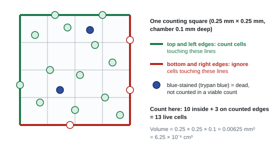
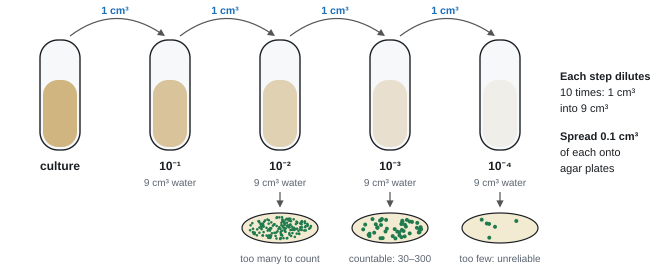
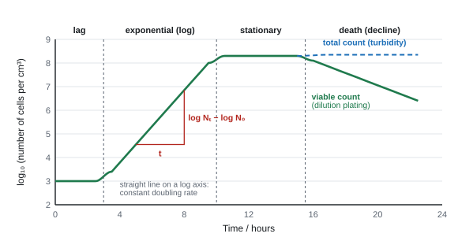
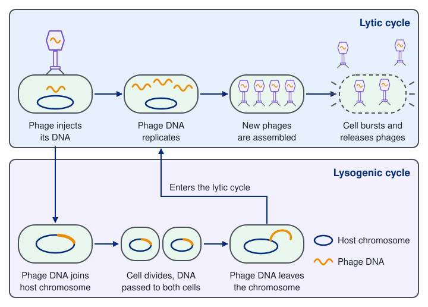
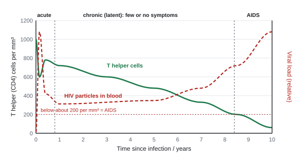
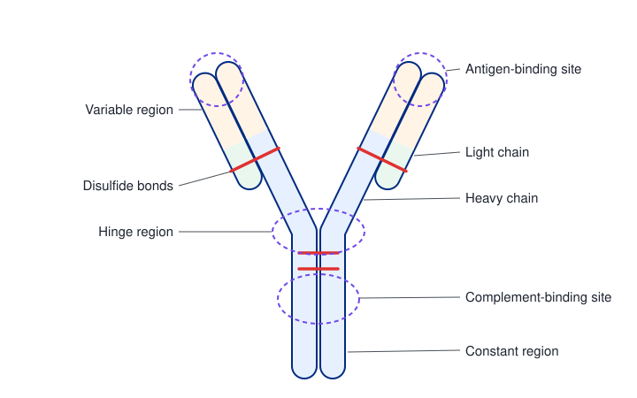
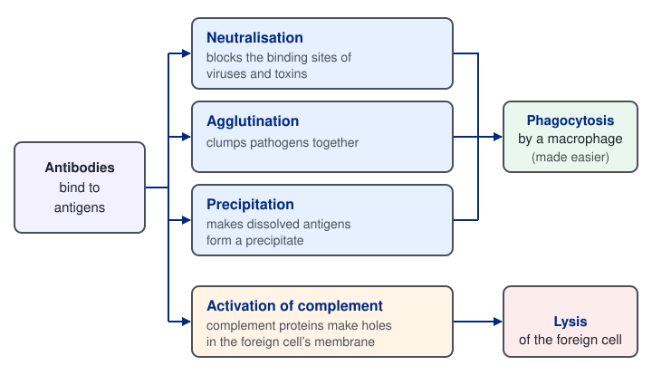
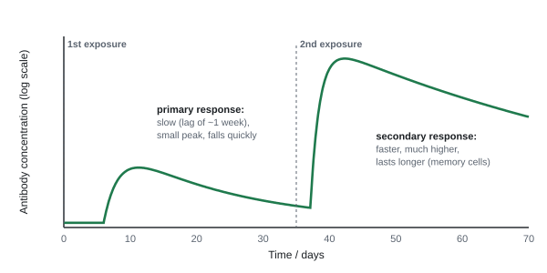
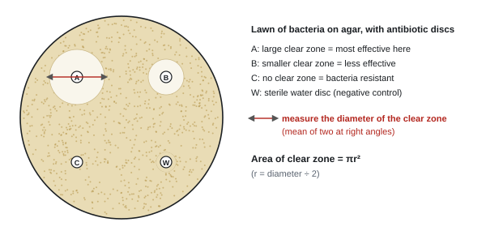

<!DOCTYPE html>
<html lang="en">
<head>
<meta charset="UTF-8">
<meta name="viewport" content="width=device-width, initial-scale=1.0">
<title>Microbiology and immunity · Edexcel IAL Biology notes · IAL Prep</title>
<link rel="canonical" href="https://ialprep.com/notes/biology/6ab-microbiology-immunity">
<meta name="description" content="Edexcel IAL Biology notes on microbiology and immunity: culturing and counting microorganisms, growth curves, bacteria and viruses, TB and HIV, the immune response, vaccines and antibiotics, spec point by spec point.">
<meta property="og:type" content="website">
<meta property="og:site_name" content="IAL Prep">
<meta property="og:title" content="Microbiology and immunity · Edexcel IAL Biology notes">
<meta property="og:description" content="Edexcel IAL Biology notes on microbiology and immunity: culturing and counting microorganisms, growth curves, bacteria and viruses, TB and HIV, the immune response, vaccines and antibiotics, spec point by spec point.">
<meta property="og:url" content="https://ialprep.com/notes/biology/6ab-microbiology-immunity">
<meta property="og:image" content="https://ialprep.com/assets/og-image.png">
<meta property="og:image:width" content="1200">
<meta property="og:image:height" content="630">
<meta property="og:image:alt" content="IAL Prep: Edexcel International AS and A Level revision">
<meta name="twitter:card" content="summary_large_image">
<link rel="icon" href="../../assets/favicon.svg" type="image/svg+xml">
<link rel="stylesheet" href="../../css/styles.css?v=20261108-1">
<link rel="stylesheet" href="../../css/nav.css?v=20261107-1">
<script src="../../js/sitemap.js?v=20261105-4"></script>
<script src="../../js/notes-biology.js?v=20261103-1"></script>
<script src="../../js/script.js?v=20261108-seo" defer></script>
<script src="../../js/sim.js?v=20261105-2" defer></script>
<script src="../../js/topics/bio-6ab.js?v=20261105-2" defer></script>
    <script src="../../js/theme.js?v=20261105-9"></script>
    <script src="../../js/motion.js?v=20261102-2"></script>
    <script src="../../js/nav.js?v=20261108-seo" defer></script>
</head>
<body>
<nav class="sidebar"></nav>
<main class="content">
<div class="page">
<h1 class="main-title">Microbiology and immunity</h1>
<p class="IntroductionText">Most microorganisms are harmless or useful, but some cause disease. This page covers how bacteria and viruses are built and reproduce, how microbiologists culture and count them safely, how tuberculosis and HIV cause disease, how the body defends itself, and how antibiotics work and why bacteria become resistant to them.</p>
<nav class="toc"></nav>

<h2 class="section-title" id="sp-6-1"><span class="spec-badge"><small>Spec</small>6.1</span>Culturing microorganisms and aseptic technique</h2>

<div class="callout spec"><p>Know how microorganisms are grown in the lab (media, conditions, inoculation, incubation) and how aseptic technique keeps cultures pure and people safe.</p></div>

<h3 class="sub-title">Why we culture microorganisms</h3>

<ul class="key-concepts"><li>Single bacteria are far too small to see. Put them on a nutrient medium in the right conditions and each cell divides again and again. A visible <b>colony</b> is a clone of millions of cells grown from one original cell.</li><li>Culturing lets you count microorganisms, identify them, test antibiotics on them, and study how fast they grow.</li></ul>

<h3 class="sub-title">What a culture needs</h3>

<div class="table-wrap"><table>
<thead><tr><th>Need</th><th>How it is supplied</th></tr></thead>
<tbody>
<tr><td><b>Nutrients</b></td><td>a <b>culture medium</b> with a carbon source (e.g. glucose), a nitrogen source (amino acids, peptones), minerals, vitamins and water</td></tr>
<tr><td><b>Liquid or solid</b></td><td><b>nutrient broth</b> (liquid, in a flask or bottle) or <b>nutrient agar</b> (solid, poured into Petri dishes). Agar is a gel made from seaweed that most microorganisms can't digest.</td></tr>
<tr><td><b>Temperature</b></td><td>an <b>incubator</b> at a set temperature, so enzymes work at a steady rate and are not denatured</td></tr>
<tr><td><b>pH</b></td><td>a <b>buffer</b> in the medium</td></tr>
<tr><td><b>Oxygen</b></td><td>aerobes need air; anaerobes need it excluded</td></tr>
</tbody></table></div>

<ul class="key-concepts"><li><b>Selective media</b> contain substances that let only one type of microorganism grow (e.g. an antibiotic, to pick out resistant bacteria). <b>Indicator media</b> change colour around colonies that have a particular feature, which helps identify them.</li></ul>

<h3 class="sub-title">Aseptic technique: every step with its reason</h3>

<p class="explanation"><b>Aseptic technique</b> = methods that prevent contamination of the culture by other microorganisms, and of the people and lab by the culture.</p>

<div class="table-wrap"><table>
<thead><tr><th>Step</th><th>Reason</th></tr></thead>
<tbody>
<tr><td>Wash hands; wipe the bench with <b>disinfectant</b> before and after</td><td>kills microorganisms on hands and surfaces</td></tr>
<tr><td><b>Sterilise</b> media and glassware in an <b>autoclave</b> (121 °C, high-pressure steam, about 15 minutes)</td><td>kills all bacteria and spores before use</td></tr>
<tr><td>Work next to a lit <b>Bunsen burner</b></td><td>the hot air rising makes an <b>updraft</b> that carries airborne microorganisms away from the culture</td></tr>
<tr><td>Heat the <b>inoculating loop</b> in the flame until red hot, then let it cool</td><td>kills microorganisms on the loop; cooling stops it killing the culture you pick up</td></tr>
<tr><td><b>Flame the neck</b> of bottles and flasks when you open and close them</td><td>kills microorganisms at the opening; the updraft stops air entering</td></tr>
<tr><td>Lift the Petri dish lid only a little, for as short a time as possible</td><td>reduces exposure to microorganisms in the air</td></tr>
<tr><td>Close doors and windows</td><td>stops draughts carrying microorganisms in</td></tr>
<tr><td><b>Tape the lid</b> with a few short strips, not all the way round</td><td>the lid can't fall off, but air can still get in, so conditions stay <b>aerobic</b> and <b>anaerobic bacteria</b> (which include many pathogens) can't grow</td></tr>
<tr><td>Incubate plates <b>upside down</b></td><td>condensation can't drip onto the agar and spread the colonies</td></tr>
<tr><td>Incubate at <b>25 °C or below</b> in school labs</td><td>discourages human pathogens, which grow best at body temperature (37 °C)</td></tr>
<tr><td>Autoclave (or soak in disinfectant) all cultures and equipment before disposal</td><td>kills the microorganisms so none are released</td></tr>
</tbody></table></div>

<h3 class="sub-title">Inoculating</h3>

<ul class="key-concepts"><li><b>Broth</b>: dip a sterile loop into the culture, transfer it into the sterile broth, swirl, replace the lid and flame the neck. A <b>shaking incubator</b> keeps the cells evenly suspended, supplies oxygen and nutrients to all of them, and keeps the temperature even.</li><li><b>Agar plate</b>: spread a small measured volume (e.g. 0.1 cm³) of liquid culture over the surface with a sterile spreader (a <b>spread plate</b>), or streak a loopful across the surface (a <b>streak plate</b>, used to get separate colonies from a colony or a thick suspension).</li></ul>

<div class="callout ms">
<ul><li>Aseptic technique: "methods used to <b>prevent contamination</b> (of the person / the culture) with other microorganisms".</li><li>Each technique needs its <b>reason</b> too: "work beside a Bunsen burner" + "to create an <b>updraft</b> / move microorganisms in the air away"; "autoclave the agar / equipment" + "to kill any bacteria present"; "flame the necks of bottles"; "reduce exposure of cultures to air"; "close doors and windows".</li><li>Why it matters: other microorganisms "compete for nutrients", "produce toxins" or "give an over-estimate of the number"; the culture may contain <b>pathogens</b> that could infect you.</li><li>Sealing a dish: tape the lid "so it does not fall off / no contamination" <b>and</b> "not completely sealed, so conditions remain <b>aerobic</b> / to prevent the growth of <b>anaerobic</b> bacteria". You need both.</li><li>Incubation: a set temperature "so that enzymes function / are not denatured"; a long time (e.g. 72 hours) "so that growth becomes <b>visible</b>".</li></ul>
<p>Often asked as: define aseptic technique; describe two techniques and explain why each matters; how to seal a Petri dish; how to inoculate a broth; why use a shaking incubator; plan a culture experiment (6-mark).</p>
</div>

<div class="callout warn">
<ul><li>"To avoid contamination" on its own scores 1 mark at most. Say <b>what</b> would be contaminated (the culture, or you) and <b>what would go wrong</b> (competition, toxins, wrong counts, infection).</li><li>Listing four techniques when the question asks you to explain two. Pick two and give a reason for each.</li><li>Sealing the lid all the way round "to stop contamination". It must stay aerobic.</li><li>Incubating at 37 °C in a school lab. That is the temperature human pathogens like best.</li></ul>
</div>

<div class="callout offspec">
<p>Examined in past papers even though the spec doesn't list it.</p>
<ul><li>Selective and indicator media count as ways to make sure you are growing (and identifying) the right microorganism (WBI14 Jan 2023).</li><li>Streaking is for picking colonies off a plate. Don't suggest it for sampling a liquid suspension: a mark scheme rejected it (WBI14 Jan 2026).</li><li>Soap removes skin bacteria physically <b>and</b> its chemicals and high pH kill them; water alone only washes them off (WBI14 Jan 2024).</li></ul>
</div>

<h2 class="section-title" id="sp-6-2"><span class="spec-badge"><small>Spec</small>6.2</span>Measuring the growth of microorganisms</h2>

<div class="callout spec"><p>Know four ways to measure microbial growth (cell counts, dilution plating, mass, turbidity), what each one actually measures, and how to calculate numbers from them.</p></div>

<h3 class="sub-title">Overview: which method counts what?</h3>

<div class="table-wrap"><table>
<thead><tr><th>Method</th><th>What it measures</th><th>Counts dead cells?</th><th>Notes</th></tr></thead>
<tbody>
<tr><td><b>Cell count</b> (haemocytometer)</td><td>total cells in a known tiny volume</td><td>yes, unless you use a stain that marks dead cells</td><td>fast; you need a microscope; the count is tedious</td></tr>
<tr><td><b>Dilution plating</b></td><td><b>viable</b> (living) cells: each one grows into a colony</td><td>no</td><td>takes 1–3 days; assumes one colony = one cell</td></tr>
<tr><td><b>Mass</b> (dry mass)</td><td>biomass</td><td>yes</td><td>used for fungi (mycelium) and large cultures; the sample is destroyed</td></tr>
<tr><td><b>Turbidity</b> (optical density)</td><td>how cloudy the culture is</td><td>yes</td><td>quick and repeatable; needs a <b>calibration curve</b> to convert to numbers</td></tr>
</tbody></table></div>

<h3 class="sub-title">Cell counts: the haemocytometer</h3>

<ul class="key-concepts"><li>A haemocytometer is a thick microscope slide with a counting chamber of known depth (usually <b>0.1 mm</b>) and a grid of squares of known area etched on it. So every square holds a <b>known volume</b>.</li><li>Mix the culture with an equal volume of <b>trypan blue</b> (an exclusion dye). Dead cells take up the dye and look blue; live cells keep it out and stay clear. Count only the clear cells to get a <b>viable</b> count. Remember that mixing 1 : 1 dilutes the sample by 2.</li><li>Fill the chamber under the coverslip, count the cells in several squares and take the <b>mean</b>.</li><li><b>Edge rule</b>: count cells touching two sides of the square (e.g. top and left) and ignore those touching the other two (bottom and right). Otherwise you count the same cell twice in neighbouring squares.</li><li>If the cells overlap or are too many to count, dilute the culture first and multiply by the dilution factor at the end.</li></ul>

<figure class="diagram"><figcaption>Edge rule: cells on the top and left lines count, cells on the bottom and right lines don't. Blue (dead) cells are left out of a viable count.</figcaption></figure>

<div class="callout example">
<h4>haemocytometer count</h4>
<p>Yeast culture mixed 1 : 1 with trypan blue (dilution factor 2). Each square is 0.25 mm × 0.25 mm, chamber 0.1 mm deep. Live cells in five squares: 12, 15, 11, 14, 13.</p>
<ol><li>Mean = 65 ÷ 5 = <b>13 cells per square</b>.</li><li>Volume of one square = 0.25 × 0.25 × 0.1 = 0.00625 mm³. 1 cm³ = 1000 mm³, so this is <b>6.25 × 10⁻⁶ cm³</b>.</li><li>Cells per cm³ in the chamber = 13 ÷ (6.25 × 10⁻⁶) = 2.08 × 10⁶.</li><li>Undo the dilution: 2.08 × 10⁶ × 2 = <b>4.16 × 10⁶ cells cm⁻³</b>.</li></ol>
<p>Shortcut for the large 1 mm × 1 mm squares: volume = 0.1 mm³ = 10⁻⁴ cm³, so cells per cm³ = mean per square × 10⁴ × dilution factor.</p>
</div>

<div class="derive" data-title="Counting cells with a haemocytometer" data-spec="use">
  <div class="step"><p>Count the cells in a square of known volume. Suppose there are 15 cells in 0.004 mm³ of a culture that was diluted 1 in 1000.</p><p class="why">Count cells touching the top and left lines of a square but not those touching the bottom and right lines, so no cell is counted twice.</p></div>
  <div class="step"><p>Cells per mm³ = 15 ÷ 0.004 = 3750.</p></div>
  <div class="step"><p>Convert to cm³ (1 cm³ = 1000 mm³): 3750 × 1000 = 3.75 × 10⁶ cells per cm³.</p></div>
  <div class="step"><p>Multiply by the dilution factor: 3.75 × 10⁶ × 1000 = 3.75 × 10⁹ cells per cm³ of the original culture.</p><p class="why">The count was made on a diluted sample, so the dilution must be reversed.</p></div>
</div>

<h3 class="sub-title">Dilution plating (viable counts)</h3>

<ul class="key-concepts"><li>A culture contains far too many cells to give separate colonies, so it is <b>diluted</b> first, in steps (a <b>serial dilution</b>). The usual step is 1 cm³ of culture into 9 cm³ of sterile water: a <b>1 in 10</b> dilution. Repeat with a fresh sterile pipette each time to get 10⁻¹, 10⁻², 10⁻³ …</li><li>Spread a known volume (e.g. 0.1 cm³) of each dilution onto an agar plate, incubate, then count the colonies on a plate with a <b>countable</b> number (roughly 30–300 well separated colonies).</li><li>Each colony grew from one living cell, so: cells per cm³ in the original = colonies ÷ volume spread × dilution factor.</li><li>Weaknesses: two cells close together give one colony (an underestimate); some species won't grow in the conditions used; it takes days.</li></ul>

<figure class="diagram"><figcaption>A 1 in 10 serial dilution. Only the plate with a countable number of separate colonies is used.</figcaption></figure>

<div class="callout example">
<h4>dilution plating</h4>
<p>0.1 cm³ of the 10⁻³ dilution was spread on a plate. 46 colonies grew.</p>
<ol><li>Cells per cm³ of the 10⁻³ dilution = 46 ÷ 0.1 = 460.</li><li>The original is 10³ times more concentrated: 460 × 10³ = <b>4.6 × 10⁵ viable cells cm⁻³</b>.</li></ol>
<p>Check your answer is sensible: the 10⁻² plate should have about 10 times as many colonies (too many to count), the 10⁻⁴ plate about 10 times fewer.</p>
</div>

<div class="callout example">
<h4>1 in 2 serial dilution</h4>
<p>To halve a concentration each step: mix <b>equal volumes</b> of the solution and water (or broth), then repeat using the <b>previous</b> dilution each time. 1 in 2, 1 in 4, 1 in 8 … after <i>n</i> steps the dilution is 1 in 2ⁿ (e.g. 1 in 256 after 8 steps).</p>
</div>

<h3 class="sub-title">Mass</h3>

<ul class="key-concepts"><li>For fungi that grow as a mat of hyphae (and for large cultures), measure biomass: filter or centrifuge a sample, dry it in an oven until the mass stops changing, and weigh it (<b>dry mass</b>). The sample is killed, so take separate samples at each time.</li><li>On agar, fungal growth can also be followed by the <b>diameter</b> (or area) of the colony.</li></ul>

<h3 class="sub-title">Turbidity (optical methods)</h3>

<ul class="key-concepts"><li>The more cells in a broth, the <b>cloudier</b> (more turbid) it is. A <b>colorimeter</b> shines light through a sample in a cuvette: more cells → more light scattered and absorbed → higher <b>absorbance</b> (optical density), lower transmission.</li><li>Zero the colorimeter with sterile broth (a <b>blank</b>) first.</li><li>Absorbance isn't a cell number. Make a <b>calibration curve</b>: measure the absorbance of cultures whose cell numbers are known (from haemocytometer counts), plot absorbance against number, and read unknown samples off the curve.</li><li>Turbidity counts <b>dead cells too</b> (and any other particles), so it measures <b>total</b> cells, not living ones.</li></ul>

<div class="callout ms">
<ul><li>"Optical methods / turbidity measure <b>total</b> cell counts (dead and alive cells)"; "dilution plating measures <b>living</b> bacteria".</li><li>Dilution plating: "use <b>serial dilutions</b>" <b>and</b> "sample added to agar and <b>spread</b>", then count colonies. Describe both steps.</li><li>Haemocytometer: count cells touching two sides, ignore the others; use an <b>exclusion dye</b> (trypan blue, eosin) to count living cells only.</li><li>Calibration curves: one curve can't be used for every organism because "some organisms are <b>larger</b> than others" and a larger cell "is more likely to be hit by light and <b>reflect / scatter</b> it"; at high concentrations the curve "<b>levels off</b>" (light scattered by several cells), so a new curve may be needed.</li><li>Limits of culturing: "some bacteria may <b>not grow</b> in the culture conditions used"; "one colony may come from more than one bacterium".</li></ul>
<p>Often asked as: name the method from a description; total v viable count on a graph; haemocytometer calculation with edge cells; explain a calibration curve (6-mark); plan how to compare the growth of two bacteria.</p>
</div>

<div class="callout warn">
<ul><li>Ignoring every cell on the edge, or counting them all. Use the two-sides rule.</li><li>Forgetting the dilution factor, or the 1 : 1 dilution with the dye.</li><li>Unit slips: 1 cm³ = 1000 mm³, so 1 mm³ = 10⁻³ cm³. Write standard form with <b>one</b> non-zero digit before the decimal point (4.6 × 10⁵, not 46 × 10⁴).</li><li>Describing the serial dilution and stopping. You must spread a known volume on agar, incubate and count.</li><li>The dye is <b>trypan</b> blue, not "tryptophan blue" (tryptophan is an amino acid).</li></ul>
</div>

<div class="callout offspec">
<p>Examined in past papers even though the spec doesn't list it.</p>
<ul><li>Exclusion dyes and the edge rule for haemocytometers (WBI14 Jan 2024).</li><li>The reasons a calibration curve differs between species and levels off at high cell densities (WBI14 Jan 2020).</li><li>Results expressed as <b>relative abundance</b> (% of each group of bacteria) in gut-flora studies (WBI14 Jun 2023).</li></ul>
</div>

<h2 class="section-title" id="sp-6-3"><span class="spec-badge"><small>Spec</small>6.3</span>The bacterial growth curve and the growth rate constant</h2>

<div class="callout spec"><p>Describe and explain the four phases of a bacterial growth curve (lag, exponential, stationary, death) and calculate the exponential growth rate constant, k.</p></div>

<h3 class="sub-title">How bacteria multiply</h3>

<ul class="key-concepts"><li>Bacteria divide by <b>binary fission</b>: the circular DNA is copied (plasmids too), the cell grows, and it splits into two genetically identical cells. It is <b>not</b> mitosis.</li><li>In good conditions the number <b>doubles</b> every generation (as often as every 20 minutes for some species). Doubling gives <b>exponential</b> growth: 1 → 2 → 4 → 8 → 16 …</li></ul>

<h3 class="sub-title">Why the y-axis is a log scale</h3>

<ul class="key-concepts"><li>Numbers rise from thousands to billions. On an ordinary axis the early part would be squashed flat. A <b>log₁₀</b> axis fits the whole range: each step of 1 is <b>ten times</b> more cells.</li><li>On a log axis, exponential growth plots as a <b>straight line</b>. The gradient of that line tells you the growth rate.</li><li>Values read off a log axis are <b>already logs</b>. Don't take the log of them again.</li></ul>

<h3 class="sub-title">The four phases</h3>

<figure class="diagram"><figcaption>Growth curve in a closed (batch) culture. Turbidity keeps counting dead cells, so it stays level when the viable count falls.</figcaption></figure>

<div class="table-wrap"><table>
<thead><tr><th>Phase</th><th>What happens</th><th>Why</th></tr></thead>
<tbody>
<tr><td><b>Lag</b></td><td>little or no increase</td><td>cells are <b>adjusting</b> to the new medium: taking up water and nutrients, growing, and making the <b>enzymes</b> (switching on genes) needed for the new nutrients before they can divide</td></tr>
<tr><td><b>Exponential (log)</b></td><td>number doubles at a constant rate; straight line on a log axis</td><td>plenty of <b>nutrients</b> and space, little waste; nothing limits division, so births far outnumber deaths</td></tr>
<tr><td><b>Stationary</b></td><td>number stays constant</td><td>nutrients running out and toxic <b>waste</b> building up (and less oxygen); rate of new cells = rate of cell death</td></tr>
<tr><td><b>Death (decline)</b></td><td>number of living cells falls</td><td>nutrients used up and waste (e.g. acids, toxins) at toxic levels; death rate &gt; rate of division</td></tr>
</tbody></table></div>

<h3 class="sub-title">The growth rate constant, k</h3>

<p class="explanation">The number of cells at time t:</p>

<div class="callout key"><p>N<sub>t</sub> = N<sub>0</sub> × 2<sup>kt</sup></p></div>

<ul class="key-concepts"><li>N<sub>0</sub> = number at the start; N<sub>t</sub> = number after time t; k = growth rate constant = <b>number of generations (doublings) per unit time</b> (e.g. h⁻¹).</li><li>Take logs and rearrange (the paper prints this version, so you don't need to learn it):</li></ul>

<div class="callout key"><p>k = (log₁₀ N<sub>t</sub> − log₁₀ N<sub>0</sub>) ÷ (0.301 × t)</p></div>

<ul class="key-concepts"><li>0.301 is log₁₀ 2. <b>Generation (doubling) time</b> = 1 ÷ k.</li><li>Only use points from the <b>exponential phase</b>.</li></ul>

<div class="callout example">
<h4>k from cell numbers</h4>
<p>N<sub>0</sub> = 2.0 × 10³ cells cm⁻³; after 4 hours N<sub>t</sub> = 6.4 × 10⁶ cells cm⁻³.</p>
<p>log N<sub>t</sub> = 6.806; log N<sub>0</sub> = 3.301; difference = 3.505.</p>
<p>k = 3.505 ÷ (0.301 × 4) = 3.505 ÷ 1.204 = <b>2.91 h⁻¹</b> (about 3 generations per hour).</p>
<p>Generation time = 1 ÷ 2.91 = 0.34 h ≈ <b>21 minutes</b>.</p>
</div>

<div class="derive" data-title="Finding the growth rate constant" data-spec="use">
  <div class="step"><p>A culture grows from 1 cell to 1024 cells in 5 hours of exponential growth. List the values: N<sub>0</sub> = 1, N<sub>t</sub> = 1024, t = 5 h.</p></div>
  <div class="step"><p>log₁₀ 1024 = 3.01 and log₁₀ 1 = 0.</p></div>
  <div class="step"><p>k = (3.01 − 0) ÷ (0.301 × 5) = 3.01 ÷ 1.505 = 2.0 generations per hour.</p><p class="why">Check: 1024 = 2¹⁰, so there were 10 generations in 5 hours, which is 2 per hour.</p></div>
</div>

<div class="callout example">
<h4>k from a log graph</h4>
<p>The y-axis is log₁₀ (cells cm⁻³). In the exponential phase, the line reads 4.2 at 4 h and 7.4 at 8 h.</p>
<p>These are already logs: difference = 7.4 − 4.2 = 3.2. Time = 8 − 4 = 4 h.</p>
<p>k = 3.2 ÷ (0.301 × 4) = <b>2.66 h⁻¹</b>.</p>
<p>Say where the numbers came from: "two points read from the straight (exponential) part of the line".</p>
</div>

<div class="callout example">
<h4>rearranging for time</h4>
<p>N<sub>0</sub> = 5.0 × 10², k = 1.5 h⁻¹. How long to reach N<sub>t</sub> = 1.0 × 10⁶?</p>
<p>t = (log N<sub>t</sub> − log N<sub>0</sub>) ÷ (0.301 × k) = (6.000 − 2.699) ÷ (0.301 × 1.5) = 3.301 ÷ 0.4515 = <b>7.31 hours</b>.</p>
<p>Prediction the other way: N<sub>0</sub> = 100, k = 2 h⁻¹, t = 3 h gives N<sub>t</sub> = 100 × 2<sup>6</sup> = <b>6400</b> cells.</p>
</div>

<div class="callout ms">
<ul><li>Lag: cells "adjust to the new environment / <b>synthesise (new) enzymes</b>". Exponential: "conditions suitable / <b>nutrients available</b>", so cells can divide. Stationary: "<b>birth rate equals death rate</b>" / "number of new cells equals cells dying". Death: "nutrients run out", "<b>toxins</b> build up".</li><li>Drawing the curve: both axes labelled ("log (number of living) cells" and "time / <b>hours</b>", with units), correct shape (flat lag, <b>straight</b> exponential section), all four phases labelled.</li><li>Finding k from a graph: show <b>where the log values come from</b>, use the <b>exponential</b> phase, subtract the times to get t, then use the equation.</li><li>Calculations: give the answer to the stated decimal places. "Taking the log of logs" loses the mark (error carried forward only).</li></ul>
<p>Often asked as: order the phases (MCQ); explain the lag and exponential phases; sketch and label the curve; calculate k or t; explain why the y-axis is log₁₀; link a product (e.g. a pigment) to the phases.</p>
</div>

<div class="callout warn">
<ul><li>Logging values that came off a log axis. If the axis says log₁₀, the numbers are already logs.</li><li>Missing the time unit on the x-axis, or drawing a curved exponential phase on a log graph.</li><li>Explaining the lag phase but not saying <b>why</b> cells can divide quickly in the exponential phase (nutrients available).</li><li>Saying bacteria divide by mitosis. It's <b>binary fission</b>.</li><li>Reading the y-axis without checking the heading: "× 10⁶" or "log₁₀" changes the number.</li></ul>
</div>

<div class="callout offspec">
<p>Examined in past papers even though the spec doesn't list it.</p>
<ul><li>A product made by the cells (e.g. a pigment) lags behind cell numbers: none in the lag phase while the enzymes are made, a rise in the exponential phase, levelling off in the stationary phase (WBI14 Jun 2025).</li><li>Changing pH or temperature could raise the growth rate either way if the current conditions are not optimal (WBI14 Jun 2022).</li></ul>
</div>

<h2 class="section-title" id="sp-6-4"><span class="spec-badge"><small>Spec</small>6.4</span>Core Practical 13: rate of growth of microorganisms in a liquid culture</h2>

<div class="callout spec"><p>Investigate how fast a microorganism grows in a liquid culture, using safe, aseptic methods and treating the organisms ethically.</p></div>

<h3 class="sub-title">Principle</h3>

<p class="explanation">Yeast (a single-celled fungus) grows in a sugar broth. As the cells multiply, the broth gets cloudier. Measure the <b>absorbance</b> (turbidity) at regular intervals, convert to cell numbers with a calibration curve (or count samples directly), and plot a growth curve.</p>

<div class="callout core">
<h4>Core practical 13: method in brief</h4>
<ol><li>Disinfect the bench. Work next to a lit Bunsen burner.</li><li>Put a measured volume of sterile glucose broth (e.g. 250 cm³) in a sterile conical flask.</li><li>Add a measured mass of dried yeast (e.g. 1 g) using aseptic technique. Plug the flask with <b>cotton wool</b> (keeps microorganisms out but lets air in) and cover loosely with foil.</li><li>Keep it at a constant temperature (e.g. 20–25 °C water bath or incubator), stirred or shaken so the cells stay suspended and get oxygen.</li><li>Zero the colorimeter with sterile broth (the <b>blank</b>).</li><li>At time 0, and then at regular intervals (e.g. every 30 minutes at first, then every few hours, for 24–48 hours), aseptically remove a sample, mix it, put it in a cuvette and read the absorbance.</li><li>Optional check: count cells in a sample with a haemocytometer (or plate a dilution) at some time points, to build the calibration curve.</li><li>Plot absorbance (or log₁₀ cell number) against time.</li></ol>
<p><b>Extension:</b> repeat at different temperatures, glucose concentrations or pH values to compare k.</p>
</div>

<h3 class="sub-title">Variables</h3>

<div class="table-wrap"><table>
<tbody>
<tr><td><b>Independent</b></td><td>time (or, in an extension, temperature / glucose concentration)</td></tr>
<tr><td><b>Dependent</b></td><td>absorbance (turbidity), converted to number of cells</td></tr>
<tr><td><b>Control</b></td><td>temperature, volume and concentration of glucose broth, mass of yeast, stirring speed, colorimeter wavelength/filter, same cuvette, time samples are left before reading</td></tr>
</tbody></table></div>

<h3 class="sub-title">Processing the results</h3>

<ul class="key-concepts"><li>Convert absorbances to cell numbers with the calibration curve.</li><li>Plot <b>log₁₀ (cell number)</b> against time. Identify the phases. Pick two points on the straight part and calculate <b>k</b> (see 6.3).</li><li>Comparing conditions: compare k values, or the time to reach the stationary phase. Repeat each condition (at least three cultures) and use means.</li></ul>

<h3 class="sub-title">Safety and ethics</h3>

<ul class="key-concepts"><li>Use a <b>non-pathogenic</b> organism (baker's yeast), keep incubation at <b>25 °C or below</b> (not 37 °C), and use aseptic technique so the culture isn't contaminated with something harmful.</li><li>Wear eye protection; take care with the Bunsen; wash hands.</li><li><b>Ethical use</b>: grow only as much culture as you need, and kill all cultures (autoclave or disinfectant) before disposal so nothing is released into the environment.</li></ul>

<h3 class="sub-title">Sources of error and improvements</h3>

<div class="table-wrap"><table>
<thead><tr><th>Problem</th><th>Fix</th></tr></thead>
<tbody>
<tr><td>Cells settle in the cuvette, so readings fall</td><td>mix the sample just before reading; read quickly</td></tr>
<tr><td>Turbidity includes <b>dead</b> cells and debris</td><td>back up with a viable count (dilution plating or trypan blue)</td></tr>
<tr><td>Fingerprints or scratches on the cuvette</td><td>handle by the ridged sides; use the same cuvette</td></tr>
<tr><td>Contamination by other microbes</td><td>strict aseptic technique; a flask of sterile broth (no yeast) as a control</td></tr>
<tr><td>Colorimeter drift</td><td>re-zero with the blank before each reading</td></tr>
</tbody></table></div>

<div class="callout ms">
<ul><li>Comparing the growth of two bacteria: "both cultured in the <b>same conditions</b>", "aseptic technique", "<b>calibration curve</b> used to determine concentration", "describe how growth rate is determined" (or a named statistics test).</li><li>Shaking: "keep bacteria <b>in suspension</b>", "supply of <b>oxygen / nutrients</b>", "keep temperature constant".</li><li>Results language from 6.2 and 6.3 applies: total v viable counts, log graphs, k from the exponential phase.</li></ul>
<p>Often asked as: the method itself has not been set as a full question (2020–2026); instead you get data from liquid cultures (optical density, samples plated at intervals, pH and temperature effects) and planning questions that need this method.</p>
</div>

<div class="callout warn">
<ul><li>Saying "use a control" without saying what it is. Here: a flask of sterile broth with no yeast, treated the same way, to show any change is caused by the yeast.</li><li>Measuring at irregular intervals, or too rarely in the first few hours, so the lag and exponential phases are missed.</li></ul>
</div>

<div class="callout offspec">
<p>Examined in past papers even though the spec doesn't list it.</p>
<ul><li>Serial 1 in 2 dilutions: "equal volumes of the substance and water / broth", "repeated using the <b>previous</b> solution" (WBI14 Oct 2021).</li></ul>
</div>

<h2 class="section-title" id="sp-6-5"><span class="spec-badge"><small>Spec</small>6.5</span>Bacteria and viruses: structure, the lytic cycle and latency</h2>

<div class="callout spec"><p>(i) Compare the structure of bacteria and viruses (nucleic acid, capsid, envelope), using Ebola, TMV, HIV and λ phage as examples. (ii) Know what the lytic cycle and latency mean.</p></div>

<h3 class="sub-title">Bacteria compared with viruses</h3>

<div class="table-wrap"><table>
<thead><tr><th>Feature</th><th>Bacteria</th><th>Viruses</th></tr></thead>
<tbody>
<tr><td>Cellular?</td><td>yes: prokaryotic cells</td><td><b>no</b>: particles, not cells</td></tr>
<tr><td>Size</td><td>about 0.5–5 µm</td><td>about 20–300 nm (Ebola threads can be longer)</td></tr>
<tr><td>Genetic material</td><td><b>DNA</b> only: one circular chromosome, free in the cytoplasm (no nucleus, no histones), often plus <b>plasmids</b></td><td><b>DNA or RNA</b> (never both), single- or double-stranded</td></tr>
<tr><td>Outer layer</td><td>cell surface membrane inside a <b>peptidoglycan (murein)</b> cell wall; some have a capsule</td><td>protein coat: the <b>capsid</b>, made of protein units (<b>capsomeres</b>); some have a lipid <b>envelope</b> outside it</td></tr>
<tr><td>Ribosomes / metabolism</td><td><b>70S</b> ribosomes; own enzymes and respiration</td><td>none: they use the host cell's ribosomes, enzymes and ATP</td></tr>
<tr><td>Other structures</td><td>flagella, pili</td><td>attachment proteins (often glycoproteins in the envelope); some carry enzymes (e.g. reverse transcriptase)</td></tr>
<tr><td>Reproduction</td><td>binary fission</td><td>only inside a living host cell</td></tr>
<tr><td>Antibiotics?</td><td>affected</td><td><b>not</b> affected</td></tr>
</tbody></table></div>

<h3 class="sub-title">The four named viruses</h3>

<div class="table-wrap"><table>
<thead><tr><th>Virus</th><th>Nucleic acid</th><th>Capsid</th><th>Envelope?</th><th>Host</th></tr></thead>
<tbody>
<tr><td><b>λ (lambda) phage</b></td><td><b>DNA</b> (double-stranded)</td><td><b>complex</b>: polyhedral head plus a tail with tail fibres</td><td><b>no</b></td><td>bacteria (<i>E. coli</i>)</td></tr>
<tr><td><b>TMV</b> (tobacco mosaic virus)</td><td>RNA (single-stranded)</td><td><b>helical</b>: a rigid rod</td><td><b>no</b></td><td>plants (tobacco, tomato)</td></tr>
<tr><td><b>Ebola</b></td><td>RNA (single-stranded)</td><td><b>helical</b>, inside a long thread-shaped particle</td><td><b>yes</b>, with glycoprotein spikes</td><td>humans and other primates</td></tr>
<tr><td><b>HIV</b></td><td>RNA (two single strands); a <b>retrovirus</b> with <b>reverse transcriptase</b></td><td>polyhedral (Edexcel papers call it icosahedral; in reality it is cone-shaped)</td><td><b>yes</b>, with glycoproteins (gp120)</td><td>humans (T helper cells)</td></tr>
</tbody></table></div>

<p class="explanation">Memory aid: only <b>λ phage</b> has DNA; only λ phage has a <b>complex</b> capsid; the <b>helical</b> pair is TMV and Ebola; the <b>enveloped</b> pair is Ebola and HIV.</p>

<h3 class="sub-title">How viruses get in and reproduce</h3>

<ul class="key-concepts"><li><b>Attachment</b>: proteins on the virus bind to complementary <b>receptors</b> on the host cell surface (λ phage's tail protein binds a sugar-transport protein, maltoporin, on <i>E. coli</i>; HIV's gp120 binds <b>CD4</b> on T helper cells).</li><li><b>Entry</b>: phages inject only their nucleic acid; enveloped viruses fuse with the membrane or are taken in by endocytosis; plant viruses get in through wounds (often made by insects).</li><li><b>Replication</b>: the host's enzymes, ribosomes, nucleotides, amino acids and ATP make new viral nucleic acid and proteins. Then new particles are <b>assembled</b>.</li><li><b>Release</b>: by bursting the cell (lysis) or by <b>budding</b> out through the membrane (taking a piece as an envelope).</li></ul>

<h3 class="sub-title">The lytic cycle and latency</h3>

<ul class="key-concepts"><li><b>Lytic cycle</b>: the virus replicates straight away. New virus particles are made and assembled, then the host cell <b>bursts (lyses)</b> and releases them to infect other cells. In λ phage, proteins called lysins break down the peptidoglycan wall so the cell bursts.</li><li><b>Latency</b>: the viral nucleic acid stays in the host cell <b>without</b> making new virus particles, so there are no symptoms. It can stay hidden for a long time, then enter the lytic cycle later (often when the host is stressed or weakened).<ul><li><b>λ phage</b>: its DNA is inserted into the bacterial chromosome (it is now a <b>prophage</b>; this is the <b>lysogenic</b> pathway). It is copied every time the bacterium divides, so all daughter cells carry it.</li><li><b>HIV</b>: reverse transcriptase makes a DNA copy of the RNA; integrase inserts it into the T helper cell's DNA as a <b>provirus</b>. It can stay latent for years.</li></ul></li></ul>

<figure class="diagram">
  
  <figcaption>The lytic cycle (top) releases new phages by bursting the host cell. In the lysogenic cycle (bottom) the phage DNA is copied with the host chromosome until it re-enters the lytic cycle.</figcaption>
</figure>

<div class="callout ms">
<ul><li>MCQ facts: Ebola = RNA, helical capsid, envelope; HIV = RNA, polyhedral capsid, envelope, reverse transcriptase; TMV = RNA, helical, no envelope, plants; λ phage = DNA, complex capsid, no envelope, bacteria.</li><li>Viral genome: "<b>genetic information / code for (viral) proteins</b>", with a named protein if one is given.</li><li>Attachment: glycoproteins "attach to the host cell by binding to <b>specific receptors</b>". λ phage: "attaches to the maltoporin so that the <b>DNA</b> can enter the cell".</li><li>Lysis: lysins "break bonds in the <b>peptidoglycan / murein</b>" so the cell bursts and the particles are released.</li><li>Provirus to lytic: drugs don't remove all the virus, so the "<b>provirus is activated</b>" and "new viral particles burst out of the T helper cells".</li></ul>
<p>Often asked as: which-virus MCQs (most papers); label or explain the parts of an unfamiliar virus (6 marks on Ebola); phage therapy graph (6-mark); fungi v bacteria v plants v animals.</p>
</div>

<div class="callout warn">
<ul><li>Treating every virus like HIV. <b>Only retroviruses</b> (HIV) have reverse transcriptase and make a provirus. Ebola and TMV are RNA viruses that copy RNA directly (Ebola brings its own RNA polymerase, because host cells don't have one that copies RNA). λ phage is a DNA virus.</li><li>"Viruses are killed / die." They aren't alive in the usual sense: say they are <b>destroyed</b> or <b>inactivated</b>.</li><li>Viruses and bacteria "divide by mitosis". Bacteria use binary fission; viruses are assembled.</li><li>"The DNA is transcribed and translated." DNA is <b>transcribed</b>; mRNA is <b>translated</b>.</li><li>Bacterial DNA as a "single strand". It is one circular <b>double-stranded</b> molecule.</li></ul>
</div>

<div class="callout offspec">
<p>Examined in past papers even though the spec doesn't list it.</p>
<ul><li>How holins and lysins burst a bacterium: holins form a hydrophilic channel through the membrane so lysins reach the wall (WBI14 Oct 2020).</li><li>Positive- and negative-strand RNA viruses (rabies): the positive strand has the codons for the proteins and is the template for new negative strands (WBI14 Oct 2021).</li><li>Phage therapy graph: bacteria rise at first (the lytic cycle takes time), then fall as cells burst; phage numbers rise after the bacteria, and the pattern is cyclical because not all bacteria are infected (WBI14 Jun 2021).</li><li>Fungi: not plants (glycogen, chitin wall), not animals (cell wall), not bacteria (nucleus, mitochondria) (WBI14 Oct 2020).</li><li>Protease inhibitors stop HIV's protease cutting a long viral protein into parts, so new particles can't be assembled (WBI14 Jan 2023).</li></ul>
</div>

<h2 class="section-title" id="sp-6-6"><span class="spec-badge"><small>Spec</small>6.6</span>How TB and HIV infect human cells and cause death</h2>

<div class="callout spec"><p>Know how <i>Mycobacterium tuberculosis</i> and HIV infect human cells and cause the symptoms that can lead to death.</p></div>

<h3 class="sub-title">Tuberculosis (TB)</h3>

<ul class="key-concepts"><li><b>Pathogen</b>: the bacterium <i>Mycobacterium tuberculosis</i>. It has a thick, <b>waxy</b> cell wall that resists digestion and drying.</li><li><b>Spread</b>: inhaled in <b>droplets</b> from an infected person's coughs and sneezes. Overcrowding, poor ventilation, poor nutrition and HIV infection all raise the risk.</li><li><b>Infection</b>:<ol><li>Bacteria reach the alveoli and are engulfed by <b>macrophages</b>.</li><li>They <b>survive inside the macrophages</b>: they stop the lysosomes fusing with the phagocytic vacuole, so they aren't digested. They multiply slowly.</li><li>In most healthy people the immune system walls off the infected macrophages in a mass of cells called a <b>tubercle</b> (granuloma). The bacteria stay <b>dormant</b> (latent TB): no symptoms, not infectious.</li><li>If the immune system weakens (HIV, malnutrition, old age, drugs), the bacteria become active, multiply and break out (<b>active TB</b>).</li></ol></li><li><b>Symptoms</b>: persistent cough (sometimes with blood), fever, night sweats, weight loss, tiredness.</li><li><b>Why it can kill</b>: the bacteria and the inflammation they cause <b>destroy lung tissue</b>, so the surface area for gas exchange falls → not enough oxygen for aerobic respiration → <b>respiratory failure</b>. Bacteria can spread in the blood to other organs (<b>organ failure</b>).</li><li><b>Treatment</b>: several antibiotics together, for <b>months</b>: the bacteria grow slowly and hide in tubercles and macrophages, and using several drugs means a mutant resistant to one is killed by another.</li></ul>

<h3 class="sub-title">HIV (human immunodeficiency virus)</h3>

<ul class="key-concepts"><li><b>Spread</b>: in body fluids: unprotected sex, shared needles, infected blood or blood products, and from mother to child (across the placenta, at birth, or in breast milk).</li><li><b>Infection and replication</b>:<ol><li><b>gp120</b> on the envelope binds to the <b>CD4 receptor</b> on a <b>T helper cell</b> (also on macrophages).</li><li>The envelope fuses with the cell membrane; the capsid enters and releases the two RNA strands and the enzymes.</li><li><b>Reverse transcriptase</b> makes a single DNA strand complementary to the viral RNA, then a double-stranded DNA copy.</li><li><b>Integrase</b> inserts this DNA into the host's DNA as a <b>provirus</b>. It may stay latent for years.</li><li>When active, the provirus is transcribed; the host's ribosomes make viral proteins; new particles are assembled.</li><li>New HIV particles <b>bud</b> out of the cell, taking some of its membrane as their envelope. The T helper cell is destroyed (by the virus, or by T killer cells that recognise it as infected).</li></ol></li></ul>

<figure class="diagram"><figcaption>Typical course without treatment. After the first flu-like illness, T helper numbers fall slowly over years until opportunistic infections take hold.</figcaption></figure>

<h3 class="sub-title">How HIV leads to AIDS and death</h3>

<ul class="key-concepts"><li><b>Acute stage</b> (first weeks): flu-like symptoms; viral numbers rise sharply, T helper count drops, then partly recovers as the immune system responds.</li><li><b>Chronic (latent) stage</b>: few or no symptoms, often for <b>years</b>, while T helper numbers fall steadily.</li><li><b>AIDS</b> (acquired immune deficiency syndrome): T helper count falls very low (below about 200 per mm³). Without T helper cells, <b>B cells aren't activated</b> (few plasma cells, few antibodies) and <b>T killer cells aren't activated</b>. The immune system can't fight infections.</li><li>Death comes from <b>opportunistic infections</b> (e.g. TB, pneumonia) and some cancers that a healthy immune system would control. HIV does not kill directly.</li><li>How fast this happens depends on the strain, other infections, age, nutrition and access to <b>antiretroviral drugs</b>.</li></ul>

<h3 class="sub-title">Why TB and HIV go together</h3>

<p class="explanation">HIV destroys T helper cells, so fewer B cells are activated → fewer antibodies → bacteria aren't <b>opsonised</b> (marked for phagocytes) → macrophages destroy fewer <i>Mycobacterium</i>. Dormant TB becomes active, and new infections take hold. TB is the leading cause of death in people with HIV.</p>

<div class="callout ms">
<ul><li>HIV: "<b>infects / targets T helper cells</b>" (ACCEPT CD4 cells); "number of T helper cells reduced"; "without T helper cells the humoral response is <b>not initiated</b>"; "fewer antibodies, so Mtb are <b>not opsonised</b>"; "phagocytosis less effective".</li><li>Drugs: "if <b>reverse transcriptase</b> is inhibited, a <b>DNA copy</b> of the viral RNA can't be made"; "if <b>integrase</b> is inhibited, the DNA can't be <b>inserted into the host DNA</b> / no provirus". Link each effect to its enzyme.</li><li>Combination therapy: "the virus may have <b>mutated</b> and become resistant to one drug"; other drugs act at other stages.</li><li>TB death: "<b>tubercles</b> in lungs", "destroys lung tissue, so <b>reduced gas exchange</b>", "insufficient oxygen for aerobic respiration", "organ failure", "immune system weakened so other infections".</li></ul>
<p>Often asked as: why HIV is an "immunodeficiency" virus; how HIV drugs work; why people with HIV get TB (4 marks); why TB kills; reading graphs of HIV infections and deaths.</p>
</div>

<div class="callout warn">
<ul><li>"HIV virus" (V already means virus). HIV is the <b>virus</b>; AIDS is the <b>syndrome</b>.</li><li>"RNA is converted into DNA." Reverse transcriptase <b>makes a DNA copy</b> using the RNA as a template.</li><li>"<i>M. tuberculosis</i> targets T cells." It infects <b>macrophages</b>; HIV is the one that targets T helper cells.</li><li>Writing a long account of HIV replication when the question asks why it causes immunodeficiency. Answer the question: fewer T helper cells → B cells and T killer cells not activated → no effective response.</li><li>TB "tubercules": the word is <b>tubercles</b>.</li></ul>
</div>

<div class="callout offspec">
<p>Examined in past papers even though the spec doesn't list it.</p>
<ul><li>Tumour necrosis factor (TNF) drives inflammation and helps macrophages; anti-TNF drugs raise the risk of TB because fewer bacteria are engulfed and destroyed (WBI14 Oct 2020).</li><li>Drugs that stop DNA synthesis stop mitosis, so there is <b>no clonal expansion</b> of T and B cells (WBI14 Jun 2021).</li><li>Why HIV numbers rise when new infections fall: <b>better treatment</b> means infected people survive longer (WBI14 Jun 2022).</li><li>TB case numbers are underestimates: not everyone is tested, false negatives, people hide their HIV status (WBI14 Jan 2024).</li></ul>
</div>

<h2 class="section-title" id="sp-6-7"><span class="spec-badge"><small>Spec</small>6.7</span>Routes of entry and the body's barriers</h2>

<div class="callout spec"><p>(i) Know the main ways pathogens get into the body. (ii) Understand how barriers (skin, stomach acid, gut and skin flora) protect against infection.</p></div>

<h3 class="sub-title">Routes of entry</h3>

<div class="table-wrap"><table>
<thead><tr><th>Route</th><th>How</th><th>Examples</th></tr></thead>
<tbody>
<tr><td><b>Respiratory system</b> (inhalation)</td><td>droplets from coughs and sneezes</td><td>TB, influenza, measles</td></tr>
<tr><td><b>Digestive system</b> (ingestion)</td><td>contaminated food and water</td><td>cholera, <i>Salmonella</i></td></tr>
<tr><td><b>Skin</b> (inoculation)</td><td>cuts, wounds, needles, animal bites</td><td>tetanus, hepatitis B, rabies</td></tr>
<tr><td><b>Vectors</b></td><td>an animal (often an insect) carries the pathogen into the blood</td><td>malaria (mosquito)</td></tr>
<tr><td><b>Direct contact / body fluids</b></td><td>sex, blood, blood transfusions</td><td>HIV, Ebola</td></tr>
<tr><td><b>Indirect contact</b></td><td>touching contaminated surfaces (fomites) then the mouth, nose or eyes</td><td>many bacteria and viruses</td></tr>
<tr><td>Other openings</td><td>urinogenital tract, eyes, ears</td><td></td></tr>
</tbody></table></div>

<h3 class="sub-title">Barriers</h3>

<div class="table-wrap"><table>
<thead><tr><th>Barrier</th><th>How it protects</th></tr></thead>
<tbody>
<tr><td><b>Skin</b></td><td>a tough outer layer of dead, <b>keratinised</b> cells that pathogens can't easily cross. <b>Sebum</b> (oil) contains fatty acids that slow microbial growth. Cuts are sealed quickly by <b>blood clots</b>.</td></tr>
<tr><td><b>Stomach acid</b></td><td><b>hydrochloric acid</b> (pH about 1–2) denatures the enzymes of most microorganisms swallowed in food and drink, killing them</td></tr>
<tr><td><b>Skin flora and gut flora</b></td><td>harmless (<b>commensal</b>) bacteria that live on the skin and in the gut. They <b>compete</b> with pathogens for <b>space</b> (attachment sites) and <b>nutrients</b>, and some make substances (e.g. lactic acid) that stop pathogens growing. Pathogens can't easily colonise.</td></tr>
<tr><td><b>Lysozyme</b></td><td>an enzyme in tears, saliva and mucus that hydrolyses bacterial cell walls, so bacteria burst</td></tr>
<tr><td><b>Mucus and cilia</b></td><td>mucus in the airways traps microorganisms; cilia sweep it up to the throat, where it is swallowed</td></tr>
<tr><td>Others</td><td>ear wax, nasal hairs, eyelashes, coughing and sneezing reflexes</td></tr>
</tbody></table></div>

<ul class="key-concepts"><li>Broad-spectrum antibiotics kill gut flora as well as pathogens. With less competition, harmful bacteria (e.g. <i>Clostridium difficile</i>) can multiply.</li></ul>

<div class="callout ms">
<ul><li>Routes: "respiratory system / inhalation", "urinogenital tract / sexual transmission", "damaged skin / open wound", "vector / injections / bites / transfusions", "eyes", "ears".</li><li>Barriers: "skin / keratin / sebum", "skin flora", "gut flora", "stomach acid / HCl", "mucus / cilia", "blood clots", "lysozyme in tears / saliva". "Immune system" is ignored as a barrier.</li><li>Flora: "<b>compete with pathogens</b> for {space / nutrients / a named nutrient}"; "produce toxins / lactic acid"; "prevent <b>colonisation</b> by pathogens". Write <b>nutrients</b>, never "food".</li><li>Antibiotics and gut flora: "antibiotics are <b>not specific</b> to one type of bacteria".</li><li>Fairness in flora studies: sample "the same part of the body", "same washing regime", "same environment", people "not taking antibiotics".</li></ul>
<p>Often asked as: two barriers; how skin flora protect; why antibiotics upset the gut flora; conclusions and design points from skin or gut bacteria data.</p>
</div>

<div class="callout warn">
<ul><li>"Flora compete for food." Say <b>nutrients</b> (or space).</li><li>Not saying the bacteria that are kept out are <b>pathogenic</b>. Skin flora are bacteria too.</li><li>"All antibiotics affect gut flora." Say broad-spectrum antibiotics are not specific, so they kill many types.</li><li>Giving "sweat" or "the immune system" as a barrier.</li></ul>
</div>

<div class="callout offspec">
<p>Examined in past papers even though the spec doesn't list it.</p>
<ul><li>Gut flora make <b>vitamin K</b> for us (WBI14 Oct 2020).</li><li>Skin flora data by group (Firmicutes, Actinobacteria, Proteobacteria): draw conclusions about which group dominates at each age (WBI14 Jun 2022).</li></ul>
</div>

<h2 class="section-title" id="sp-6-8"><span class="spec-badge"><small>Spec</small>6.8</span>The non-specific response: inflammation, lysozyme, interferon and phagocytosis</h2>

<div class="callout spec"><p>Understand the body's non-specific responses to infection: inflammation, lysozyme action, interferon and phagocytosis.</p></div>

<p class="explanation"><b>Non-specific</b> responses happen straight away and are the <b>same whatever the pathogen</b>. The specific immune response (6.9–6.10) takes days and targets one antigen.</p>

<h3 class="sub-title">Inflammation</h3>

<ol class="key-concepts"><li>Damaged tissue and <b>mast cells</b> release <b>histamine</b> (and other chemicals, e.g. cytokines).</li><li>Histamine makes arterioles <b>dilate</b> (vasodilation) → more blood flows to the area → it becomes <b>red</b> and <b>warm</b>.</li><li>Histamine makes capillary walls <b>more permeable</b> → plasma, proteins and white blood cells leak out into the tissue → <b>swelling</b> (oedema). The swelling and chemicals cause <b>pain</b>.</li><li>Phagocytes are attracted to the site (by chemicals released there) and leave the capillaries to destroy pathogens.</li></ol>

<p class="explanation">Signs and their roles:</p>

<div class="table-wrap"><table>
<thead><tr><th>Sign</th><th>Role</th></tr></thead>
<tbody>
<tr><td><b>Redness / swelling</b></td><td>more blood, phagocytes, antibodies and tissue fluid reach the site</td></tr>
<tr><td><b>Heat</b></td><td>speeds up enzyme activity, so phagocytes (and lysozyme) work faster; may slow pathogens</td></tr>
<tr><td><b>Pain</b></td><td>warns you of damage, so you protect the area</td></tr>
</tbody></table></div>

<h3 class="sub-title">Lysozyme</h3>

<ul class="key-concepts"><li>An enzyme in tears, saliva, mucus and inside phagocytes (in lysosomes).</li><li>It <b>hydrolyses the peptidoglycan</b> in bacterial cell walls (especially Gram-positive bacteria). The weakened wall can't resist the osmotic entry of water, so the bacterium bursts (<b>lysis</b>).</li></ul>

<h3 class="sub-title">Interferon</h3>

<ul class="key-concepts"><li>Proteins <b>secreted by virus-infected cells</b>.</li><li>They bind to nearby uninfected cells and make them <b>stop viral replication</b> (they inhibit viral protein synthesis), so the virus spreads more slowly.</li><li>They also <b>activate</b> macrophages and T killer cells and boost inflammation.</li></ul>

<h3 class="sub-title">Phagocytosis</h3>

<ol class="key-concepts"><li>Phagocytes (<b>neutrophils</b> and <b>macrophages</b>) are attracted to the pathogen by chemicals it releases or by chemicals from damaged cells (<b>chemotaxis</b>).</li><li>Receptors on the phagocyte bind to <b>non-self</b> molecules on the pathogen (binding is easier when the pathogen is covered in antibodies, see 6.9).</li><li>The phagocyte <b>engulfs</b> the pathogen by endocytosis into a <b>phagocytic vacuole</b> (phagosome).</li><li><b>Lysosomes</b> fuse with the vacuole and release <b>hydrolytic enzymes</b> (including lysozyme) that <b>digest</b> the pathogen.</li><li>Macrophages then <b>display</b> fragments of the pathogen's antigens on their surface: they become <b>antigen-presenting cells</b> and set off the specific response.</li></ol>

<div class="table-wrap"><table>
<thead><tr><th></th><th>Neutrophils</th><th>Macrophages</th></tr></thead>
<tbody>
<tr><td>Nucleus</td><td>lobed</td><td>large, round or bean-shaped</td></tr>
<tr><td>Timing</td><td>first to arrive; short-lived</td><td>arrive later; live longer</td></tr>
<tr><td>Antigen presentation</td><td>no</td><td><b>yes</b>: they link non-specific and specific responses</td></tr>
</tbody></table></div>

<div class="callout ms">
<ul><li>Signs: "pain", "redness", "heat", "swelling", "loss of function" (rubor, calor, dolor accepted). Fever, itching and rash are ignored.</li><li>Roles: pain "<b>alerts</b> the person to an injury"; heat "<b>speeds up</b> enzyme activity / phagocytosis / chemical reactions"; swelling and redness bring more "blood / white blood cells / phagocytes / antibodies / tissue fluid". Raised temperature may also "denature the pathogen's enzymes".</li><li>Interferon: "<b>secreted by infected cells</b>", "<b>anti-viral</b> proteins", "prevent <b>viral replication</b> / synthesis of viral proteins / spread of virus", "activate macrophages / T killer cells". It is <b>not</b> part of the specific response.</li><li>Phagocytosis: "engulf the bacteria" and "destroy them with <b>hydrolytic enzymes / lysozyme</b>".</li></ul>
<p>Often asked as: name two signs of inflammation and give the role of each; why a raised temperature helps; how interferon works (two ideas for 2 marks); the role of macrophages.</p>
</div>

<div class="callout warn">
<ul><li>Giving vasodilation as a <b>sign</b> of inflammation. It's a cause; the signs are redness, heat, swelling and pain.</li><li>Explaining what <b>causes</b> each sign when the question asks for its <b>role</b>.</li><li>Confusing <b>lysosome</b> (the organelle) with <b>lysozyme</b> (the enzyme).</li><li>Phagocytes "eat" bacteria. Write <b>engulf</b> and <b>digest with hydrolytic enzymes</b>.</li></ul>
</div>

<div class="callout offspec">
<p>Examined in past papers even though the spec doesn't list it.</p>
<ul><li>Cytokines such as <b>TNF</b> (tumour necrosis factor) trigger inflammation and phagocytosis; anti-TNF drugs treat inflammatory disease but weaken defence against infection (WBI14 Oct 2020).</li><li>Comparing anti-inflammatory treatments from data: describe both, then say which is more effective (WBI14 Jan 2021).</li><li>Ebola's protein VP35 blocks interferon, so neighbouring cells are not protected (WBI14 Jan 2020).</li></ul>
</div>

<h2 class="section-title" id="sp-6-9"><span class="spec-badge"><small>Spec</small>6.9</span>Antigens, antibodies and antigen-presenting cells</h2>

<div class="callout spec"><p>Understand how antigens and antibodies work in the immune response, including the roles of plasma cells, macrophages and antigen-presenting cells.</p></div>

<h3 class="sub-title">Antigens</h3>

<ul class="key-concepts"><li>An <b>antigen</b> is a molecule (usually a protein or glycoprotein) that triggers an immune response. Antigens are on the surface of pathogens, infected cells, cancer cells, transplanted cells and toxins.</li><li>Your own cells carry <b>self</b> antigens, which your lymphocytes tolerate. Antigens on anything else are <b>non-self</b> (foreign).</li><li>Each antigen has a specific 3D shape, which depends on its amino acid sequence.</li></ul>

<h3 class="sub-title">Antigen-presenting cells (APCs)</h3>

<ul class="key-concepts"><li>A <b>macrophage</b> engulfs a pathogen and digests it (6.8). It then places fragments of the pathogen's antigens on its cell surface membrane (held by proteins called MHC). It is now an <b>antigen-presenting cell</b>.</li><li>The APC presents the antigen to <b>T helper cells</b>. Only the T helper cell with a <b>complementary</b> receptor binds it and is activated (6.10).</li></ul>

<h3 class="sub-title">Antibodies</h3>

<ul class="key-concepts"><li>Antibodies (immunoglobulins) are <b>proteins</b> secreted by <b>plasma cells</b> (which develop from B cells).</li><li>Structure: <b>four polypeptide chains</b> (two <b>heavy</b>, two <b>light</b>) held together by <b>disulfide bridges</b>, forming a Y shape.<ul><li><b>Variable region</b> at the tip of each arm: a different amino acid sequence for each antibody, so a different shape. It forms the <b>antigen-binding site</b>, which is <b>complementary</b> to one specific antigen. Two binding sites per antibody.</li><li><b>Constant region</b>: the same within a class of antibodies; binds to receptors on phagocytes.</li><li><b>Hinge region</b>: flexible, so the arms can bind antigens different distances apart.</li></ul></li></ul>

<figure class="diagram">
  
  <figcaption>An antibody: the variable regions form the antigen-binding sites; the constant region interacts with immune cells.</figcaption>
</figure>

<h3 class="sub-title">What antibodies do</h3>

<p class="explanation">Antibodies don't destroy pathogens themselves. They bind to antigens to form <b>antigen–antibody complexes</b>, which:</p>

<ul class="key-concepts"><li><b>Agglutinate</b> pathogens: each antibody has two binding sites, so it links pathogens together into clumps. Phagocytes can engulf many at once, and the pathogens can't spread.</li><li><b>Neutralise</b>: antibodies bind to <b>toxins</b> (antitoxins) so they can't bind their target cells, or block the sites a pathogen uses to attach to host cells.</li><li><b>Opsonise</b>: antibodies coat (mark) the pathogen so phagocytes bind and engulf it more easily.</li></ul>

<figure class="diagram">
  
  <figcaption>Antibody binding leads either to phagocytosis or to lysis of the foreign cell.</figcaption>
</figure>

<div class="callout ms">
<ul><li>Antigen presentation: "<b>macrophages</b> present antigen (on their surface / on MHC) to <b>T helper</b> cells". Presentation to T killer cells or B cells is not accepted.</li><li>Antibody action: antibodies "{bind to / neutralise / agglutinate} the antigen"; "<b>opsonisation</b>" so macrophages engulf and digest; "antibodies bind the macrophage to the virus".</li><li>Specificity: an antibody "can only bind to its antigen because of the <b>complementary shape</b> of the antigen-binding site (variable region)".</li><li>B cells: "B cells <b>differentiate into plasma cells</b>, which produce antibodies".</li><li>Wrong blood transfusion: "B antigens recognised as <b>foreign</b>", "humoral response", "antibodies released by plasma cells", "<b>agglutination</b> / destruction of red blood cells".</li></ul>
<p>Often asked as: describe antigen presentation; how a vaccine gives immunity (4 marks); why an antibody is specific; how antibodies help destroy cancer cells or plaques; primary and secondary responses on a log graph (6-mark).</p>
</div>

<div class="callout warn">
<ul><li>The most repeated errors in every examiner report: "antibodies <b>kill / destroy</b> pathogens" (they bind, then phagocytes destroy); "B cells produce antibodies" (plasma cells do); "plasma cells become antibodies"; "the virus is killed".</li><li>Mixing up <b>opsonisation</b> (marking for phagocytes), <b>agglutination</b> (clumping) and <b>neutralisation</b> (blocking toxins or binding sites). Name the one that fits.</li><li>Calling the antigen-binding site an "active site". Antibodies aren't enzymes.</li><li>"The pathogen becomes an antigen-presenting cell." The <b>macrophage</b> does.</li></ul>
</div>

<div class="callout offspec">
<p>Examined in past papers even though the spec doesn't list it.</p>
<ul><li>Blood groups: antigens A and B on red blood cells; group O has neither, so it can be given to anyone (WBI14 Oct 2020).</li><li><b>ELISA</b>: an antibody fixed to a plate catches a specific antigen; a second labelled antibody and a colour reaction show it; unbound antibody is washed off (WBI14 Jan 2023).</li><li>Monoclonal and bispecific antibodies (one arm binds a cancer cell, the other a T killer cell, bringing them together) (WBI14 Jun 2025).</li><li>Comparing titres on a log axis: 10<sup>4.4</sup> ÷ 10<sup>3.1</sup> = 10<sup>1.3</sup> ≈ <b>20 times</b> higher (WBI14 Jan 2024).</li></ul>
</div>

<h2 class="section-title" id="sp-6-10"><span class="spec-badge"><small>Spec</small>6.10</span>B cells and T cells</h2>

<div class="callout spec"><p>Understand the different roles of B cells (B memory and B effector cells) and T cells (T helper, T killer and T memory cells) in the immune response.</p></div>

<h3 class="sub-title">Lymphocytes and clonal selection</h3>

<ul class="key-concepts"><li>Lymphocytes are made in the bone marrow. <b>B cells</b> mature in the bone marrow, <b>T cells</b> in the thymus.</li><li>Each lymphocyte has receptors of <b>one</b> shape on its surface. Among millions of lymphocytes, a few have receptors complementary to any particular antigen.</li><li>When a pathogen arrives, only the lymphocytes with matching receptors are <b>selected</b> and activated (<b>clonal selection</b>). They divide by <b>mitosis</b> to form a large <b>clone</b> of genetically identical cells (<b>clonal expansion</b>).</li></ul>

<h3 class="sub-title">Step by step</h3>

<div class="derive" data-title="From infection to antibodies and killer T cells" data-spec="use">
  <div class="step"><p>A macrophage engulfs the pathogen and presents its antigens (APC).</p></div>
  <div class="step"><p>A <b>T helper cell</b> with a complementary receptor binds the presented antigen and is <b>activated</b>. It divides by mitosis into a clone of T helper cells and <b>T memory</b> cells.</p></div>
  <div class="step"><p>Activated T helper cells release <b>cytokines</b> (chemical signals) that:</p><ul><li>activate the <b>B cells</b> whose surface antibodies have bound the same antigen;</li><li>activate <b>T killer cells</b> with complementary receptors;</li><li>stimulate phagocytes.</li></ul><p class="why">The B cell cannot be fully activated without these cytokines, which is one reason the first response is slow.</p></div>
  <div class="step"><p><b>Humoral response (B cells)</b>: activated B cells divide by mitosis. Most become <b>B effector cells</b>, which differentiate into <b>plasma cells</b> that secrete large amounts of one antibody into the blood and lymph. Some become <b>B memory cells</b>.</p><p class="why">Plasma cells have extensive rough endoplasmic reticulum to make antibody protein and many mitochondria to supply ATP.</p></div>
  <div class="step"><p><b>Cell-mediated response (T killer cells)</b>: activated T killer cells divide by mitosis. They bind to body cells displaying the antigen (virus-infected or cancer cells) and release <b>perforins</b>, which make pores in the cell membrane, so the cell dies (<b>lyses</b>). This releases the viruses inside, where antibodies and phagocytes can deal with them. Some become <b>T memory</b> cells.</p></div>
</div>

<div class="table-wrap"><table>
<thead><tr><th>Cell</th><th>Role</th></tr></thead>
<tbody>
<tr><td><b>T helper</b></td><td>binds antigen on an APC; releases cytokines that activate B cells, T killer cells and phagocytes</td></tr>
<tr><td><b>T killer</b> (cytotoxic)</td><td>destroys body cells that display the antigen (infected or cancer cells)</td></tr>
<tr><td><b>T memory</b></td><td>stay in the body for years; on re-infection, divide quickly into T helper and T killer cells</td></tr>
<tr><td><b>B effector</b></td><td>divide and differentiate into <b>plasma cells</b>, which secrete antibodies</td></tr>
<tr><td><b>B memory</b></td><td>stay in the body for years; on re-infection, divide quickly into plasma cells, giving the fast secondary response</td></tr>
</tbody></table></div>

<h3 class="sub-title">Why both T helper and T killer cells are needed</h3>

<ul class="key-concepts"><li>Without T helper cells, B cells and T killer cells aren't activated (the reason HIV causes immunodeficiency).</li><li>Antibodies can't reach viruses hiding <b>inside</b> cells. T killer cells destroy the infected cells, so the virus can't keep replicating there.</li></ul>

<div class="callout ms">
<ul><li>T helper cells "<b>activate / stimulate</b> B cells (to divide)" and "T killer cells"; they "<b>release cytokines</b>".</li><li>T killer cells "release <b>perforins</b>" that "cause the infected / cancer cells to <b>burst / lyse</b>"; they must be activated and "<b>divide</b> so there are enough T killer cells". ACCEPT cytotoxic, CD8.</li><li>Destroying infected cells "releases the viruses so macrophages can destroy them". Not "kills the virus".</li><li>Clones: "<b>genetically</b> identical cells"; the word "genetically" is required.</li><li>Memory cells: on re-infection, a "<b>faster, higher</b> secondary response"; plasma cells make antibodies sooner.</li></ul>
<p>Often asked as: which cell presents to which (MCQ); why both T helper and T killer cells are needed; how T killer cells are activated and act; the effect of a drug that stops cell division; an immune response to cancer cells (4 marks).</p>
</div>

<div class="callout warn">
<ul><li>"T helper cells turn into T killer cells." They are separate cell types; T helpers <b>activate</b> T killers.</li><li>Confusing the cell types, or listing everything you know about T killer cells instead of answering the "why" (e.g. why so many are needed: one cell can't destroy many infected cells).</li><li>Leaving out "genetically" when you describe the clone made by mitosis.</li></ul>
</div>

<div class="callout offspec">
<p>Examined in past papers even though the spec doesn't list it.</p>
<ul><li>Receptor names: <b>CD4</b> on T helper cells, <b>CD8</b> on T killer cells; <b>perforins</b> and <b>cytokines</b> by name (WBI14 Oct 2024).</li><li>Immunosuppressive drugs that block DNA synthesis stop mitosis, so no clonal expansion of T or B cells (WBI14 Jun 2021).</li><li>CAR-T therapy: a patient's own T cells are given a new receptor gene (using a virus vector), cloned and returned; they aren't rejected because they carry no foreign antigens (WBI14 Jan 2020).</li><li>Cancer cells carry new antigens (neoantigens) made by mutations in their DNA (WBI14 Oct 2023).</li></ul>
</div>

<h2 class="section-title" id="sp-6-11"><span class="spec-badge"><small>Spec</small>6.11</span>Developing immunity: natural, artificial, active and passive</h2>

<div class="callout spec"><p>Understand the four ways a person can become immune: natural or artificial, and active or passive.</p></div>

<h3 class="sub-title">Primary and secondary responses</h3>

<figure class="diagram"><figcaption>The secondary response is faster, larger and longer-lasting because memory cells are already there.</figcaption></figure>

<ul class="key-concepts"><li><b>Primary response</b> (first exposure): only a few lymphocytes match the antigen. Selection, clonal expansion and plasma cell formation take days, so antibody levels rise slowly and stay fairly low. You usually get <b>ill</b> (symptoms) before the pathogen is cleared. <b>Memory cells</b> are made.</li><li><b>Secondary response</b> (same antigen again): many <b>memory cells</b> recognise it straight away and divide quickly into plasma cells. Antibodies are made <b>sooner, faster and in much larger amounts</b>, and stay high for longer. The pathogen is usually destroyed <b>before symptoms</b> appear. You are <b>immune</b>.</li></ul>

<h3 class="sub-title">Active and passive immunity</h3>

<ul class="key-concepts"><li><b>Active</b>: your own immune system meets the antigen, makes antibodies and <b>memory cells</b>. Takes time to develop but <b>long-lasting</b>.</li><li><b>Passive</b>: you receive <b>ready-made antibodies</b> from another source. Protection is <b>immediate</b> but <b>short-term</b>: no memory cells are made, and the antibodies are broken down within weeks to months.</li></ul>

<div class="table-wrap"><table>
<thead><tr><th></th><th><b>Active</b> (own antibodies + memory cells)</th><th><b>Passive</b> (antibodies given)</th></tr></thead>
<tbody>
<tr><td><b>Natural</b></td><td>catching the disease and recovering</td><td>antibodies from the mother cross the <b>placenta</b> to the fetus, or pass to the baby in <b>breast milk</b> (colostrum)</td></tr>
<tr><td><b>Artificial</b></td><td><b>vaccination</b></td><td><b>injection of antibodies</b> (e.g. antitoxin for tetanus, antivenom)</td></tr>
</tbody></table></div>

<h3 class="sub-title">Vaccines</h3>

<ul class="key-concepts"><li>A vaccine contains <b>antigens</b> in a harmless form: an <b>attenuated</b> (weakened) or <b>inactivated</b> pathogen, a purified antigen or toxoid, or mRNA that makes your cells produce the antigen.</li><li>It causes a primary response, so memory cells form without you getting the disease. A real infection later gets a fast secondary response.</li><li><b>Boosters</b> give a secondary response, raising antibody levels and memory cell numbers further.</li><li>Vaccines may need updating when a pathogen's antigens change (6.12).</li></ul>

<div class="callout example">
<h4>reading an immunity question</h4>
<p>A pregnant woman is vaccinated. Her baby has antibodies at birth that fall over the next 3 months.</p>
<p>The mother's immune system made the antibodies (<b>artificial active</b> immunity for her). They crossed the <b>placenta</b> into the <b>fetus</b>, so the baby has <b>natural passive</b> immunity. No memory cells were made in the baby, and the antibodies are broken down, so the level falls.</p>
</div>

<div class="callout ms">
<ul><li>Active: "B cells differentiate into plasma cells", "<b>memory cells</b> are formed", long-term. Passive: "antibodies injected / received", short-term, no memory cells.</li><li>Vaccine: "an <b>inactive / attenuated</b> (weakened) form of the pathogen". "Dead virus" is not accepted.</li><li>Maternal vaccination: "plasma cells released antibodies"; "antibodies <b>pass across the placenta</b> (to the fetus)" and "remain in the blood until after birth". In this question, antibodies "in the milk" or the baby's cells crossing are not accepted.</li><li>Secondary response: similarity "antibody concentration rises (and falls)"; difference "rises <b>sooner / higher / faster</b>".</li><li>Herd immunity: "vaccinated people won't develop the disease, so there are <b>fewer infected people to pass it on</b>", protecting those who can't be vaccinated.</li></ul>
<p>Often asked as: tick-grids on types of immunity; how a vaccine works; herd immunity; maternal vaccines; compare primary and secondary response graphs; 6-mark on vaccine data for two groups of animals.</p>
</div>

<div class="callout warn">
<ul><li>"Dead viruses in the vaccine." Viruses aren't alive: write <b>inactivated</b> or <b>attenuated</b>.</li><li>"Baby" when you mean "fetus" (before birth); "the vaccine given to the mother" when the question says pregnant woman.</li><li>Confusing "<b>infected</b>" with "<b>develops the disease</b>". A vaccinated person may be infected but the pathogen is destroyed before symptoms appear.</li><li>Saying passive immunity gives memory cells. It doesn't.</li></ul>
</div>

<div class="callout offspec">
<p>Examined in past papers even though the spec doesn't list it.</p>
<ul><li><b>Herd immunity</b> is not in the spec but is credited (WBI14 Jan 2021).</li><li>Antibody levels fall because antibodies are broken down (and, in a pregnant animal, transferred to the young) (WBI14 Jan 2026).</li><li>A vaccine made from one virus subtype can protect against a similar one if their antigens are similar in shape (WBI14 Oct 2024).</li><li>Planning a vaccine trial: control the dose, timing, age and health of the subjects; use large groups (WBI14 Jan 2024).</li></ul>
</div>

<h2 class="section-title" id="sp-6-12"><span class="spec-badge"><small>Spec</small>6.12</span>The evolutionary race between pathogens and hosts</h2>

<div class="callout spec"><p>Understand how the ways pathogens evade the immune system support the idea of an "evolutionary race" between pathogens and their hosts.</p></div>

<h3 class="sub-title">The idea</h3>

<ul class="key-concepts"><li>Hosts with better defences survive and reproduce more, so defences evolve. That puts a <b>selection pressure</b> on pathogens: any pathogen with a <b>mutation</b> that helps it evade the defences survives and reproduces, so evasion evolves. That in turn selects for new host defences, and so on.</li><li>Neither side "wins" for long. The evasion mechanisms we see in pathogens today only make sense as the result of this repeated natural selection, so they are <b>evidence</b> for the race.</li></ul>

<h3 class="sub-title">Evasion by HIV</h3>

<ul class="key-concepts"><li><b>Kills T helper cells</b>, the cells that coordinate the whole specific response.</li><li><b>High mutation rate</b> (reverse transcriptase makes many copying errors) → the genes for its surface proteins change → <b>antigens change shape</b> (antigenic variation). Memory cells and antibodies from earlier infection no longer fit, so each new variant needs a new primary response. This also makes a vaccine very hard to design.</li><li>Hides as a <b>provirus</b> (latency) inside cells where the immune system can't see it.</li><li>Reduces the display of its antigens on infected cells, so T killer cells are less likely to recognise them.</li></ul>

<h3 class="sub-title">Evasion by <i>Mycobacterium tuberculosis</i></h3>

<ul class="key-concepts"><li><b>Survives inside macrophages</b> by stopping lysosomes fusing with the phagocytic vacuole, so it isn't digested.</li><li>Its thick <b>waxy cell wall</b> resists digestion.</li><li>Hides <b>dormant</b> inside tubercles for years.</li><li>Interferes with antigen presentation, so T cells are activated more slowly.</li></ul>

<h3 class="sub-title">Other examples (beyond the spec)</h3>

<ul class="key-concepts"><li><b>Influenza</b>: small mutations change its antigens every year (antigenic drift), so new vaccines are needed each season.</li><li><b>λ phage and <i></i></b>: a mutation in the <i>E. coli</i> gene for maltoporin changes its shape so the phage can't attach; a mutation in the phage's attachment protein lets it bind the new shape. The maltoporin must stay functional, because the bacterium needs it to take in sugars for respiration.</li><li><b>Ebola</b> blocks interferon (6.8). Hosts respond in turn, e.g. with interferon and with T killer cells that detect infected cells.</li></ul>

<div class="callout ms">
<ul><li>Antigen change: "<b>mutation</b> changes the amino acid sequence", "so the protein is a <b>different shape</b>", "<b>memory cells won't recognise</b> the new antigen", "another <b>primary response</b> is needed".</li><li>λ phage 6-mark: bacteria — "mutation in the gene changing the <b>structure of the maltoporin</b> so the J protein can no longer bind"; phage — "mutation in the viral DNA coding for the J protein, able to bind the altered maltoporin"; "the virus acts as a <b>selection pressure</b>"; top mark: "maltoporin must <b>remain functional</b>, otherwise no sugars for respiration", or how mutations pass to the next generation.</li><li>Why we need new antibiotics: "bacteria are becoming <b>resistant</b>", "so we won't be able to treat resistant infections"; "to win the evolutionary race" is accepted.</li></ul>
<p>Often asked as: 6-mark on a phage–bacterium race in context; why new antibiotics are needed; why memory cells fail when an antigen mutates.</p>
</div>

<div class="callout warn">
<ul><li>Generic answers ("pathogens evolve") without the context's named molecules (e.g. J protein, maltoporin).</li><li>Saying pathogens mutate "in order to" evade. Mutations are <b>random</b>; evasion is <b>selected</b>.</li><li>Viruses and bacteria "dividing by mitosis".</li><li>Bringing in antibiotics as selection pressures when the question asks something else (e.g. why a new drug is needed).</li></ul>
</div>

<div class="callout offspec">
<p>Examined in past papers even though the spec doesn't list it.</p>
<ul><li>The λ phage / <i>E. coli</i> maltoporin race (WBI14 Jan 2022).</li><li>HIV <i>env</i> gene mutations change envelope protein shape, so a vaccine based on one strain may not work (WBI14 Oct 2025).</li><li>Note: examiners judged slime-capsule answers beyond the scope of the phage question (WBI14 Jan 2022).</li></ul>
</div>

<h2 class="section-title" id="sp-6-13"><span class="spec-badge"><small>Spec</small>6.13</span>Bacteriostatic and bactericidal antibiotics</h2>

<div class="callout spec"><p>Understand the difference between bacteriostatic antibiotics (which stop bacteria growing) and bactericidal antibiotics (which kill them).</p></div>

<h3 class="sub-title">Antibiotics</h3>

<ul class="key-concepts"><li>An <b>antibiotic</b> is a substance that kills bacteria or stops them growing, without harming human cells.</li><li><b>Bactericidal</b>: <b>kills</b> bacteria. Example: <b>penicillin</b> stops the enzymes that form cross-links in the peptidoglycan cell wall. In growing bacteria the wall becomes weak; water enters by osmosis and the cell <b>bursts</b> (osmotic lysis). Vancomycin also acts on the wall.</li><li><b>Bacteriostatic</b>: <b>stops</b> bacteria <b>growing and dividing</b> but doesn't kill them. Example: <b>tetracycline</b> binds to bacterial ribosomes and stops protein synthesis. The population stays the same size (like a stationary phase), and the immune system destroys the bacteria. If the drug is stopped too early, the bacteria can start dividing again. High doses of some bacteriostatic drugs can kill.</li></ul>

<div class="table-wrap"><table>
<thead><tr><th></th><th>Bactericidal</th><th>Bacteriostatic</th></tr></thead>
<tbody>
<tr><td>Effect on cells</td><td>kills them</td><td>stops growth and division</td></tr>
<tr><td>Viable count in a culture</td><td><b>falls</b></td><td>stays <b>constant</b></td></tr>
<tr><td>Relies on the immune system?</td><td>less</td><td>yes, to remove the bacteria</td></tr>
<tr><td>Examples</td><td>penicillin, vancomycin</td><td>tetracycline</td></tr>
</tbody></table></div>

<h3 class="sub-title">Why antibiotics don't harm human cells or viruses</h3>

<ul class="key-concepts"><li>Antibiotics target structures human (eukaryotic) cells don't have, or have in a different form: the <b>peptidoglycan cell wall</b>, <b>70S ribosomes</b> (ours are 80S), particular bacterial enzymes (e.g. DNA gyrase).</li><li><b>Viruses</b> have no cell wall, ribosomes or metabolism of their own, so antibiotics have nothing to act on. Viral diseases (flu, colds) can't be treated with antibiotics.</li></ul>

<div class="callout ms">
<ul><li>Antibiotic / bactericidal: "a {chemical / substance / drug} that {kills / inhibits the growth of} bacteria". <b>Bactericidal must say "kills"</b>. Viruses or antibodies score nothing.</li><li>Bacteriostatic: "<b>prevents cell division / growth</b>"; keeps bacteria in the stationary phase.</li><li>Compare: a categorical similarity ("<b>both</b> target bacteria") and a paired difference ("bacteriostatic <b>prevent growth</b> whereas bactericidal <b>kill</b>").</li><li>Why bacteria not humans: "bacteria are <b>prokaryotic</b> (humans are eukaryotic)", or a named target such as the cell wall or DNA gyrase ("human cells do not have DNA gyrase, therefore not harmed").</li><li>Telling them apart: grow bacteria, add the antibiotic, then plate out samples (colonies grow from bacteriostatic but not bactericidal); or count living cells (constant = bacteriostatic, falls = bactericidal); or use an exclusion dye.</li></ul>
<p>Often asked as: define bactericidal; compare two named antibiotics; identify the type from a growth graph; effects on a pie chart of throat bacteria; plan a test to tell them apart.</p>
</div>

<div class="callout warn">
<ul><li>Confusing <b>antibiotics</b> with <b>antibodies</b>: this scores zero.</li><li>Definitions that don't say "<b>substance</b>" or "chemical".</li><li>"Bacteria become <b>immune</b> to antibiotics." They become <b>resistant</b>.</li><li>Defining the types by mechanism ("bactericidal destroy the wall, bacteriostatic stop protein synthesis"). Define by the <b>effect</b>: kill v stop growth.</li></ul>
</div>

<div class="callout offspec">
<p>Examined in past papers even though the spec doesn't list it.</p>
<ul><li>Bacterial DNA is supercoiled by <b>DNA gyrase</b>; an antibiotic that blocks it stops bacteria dividing but doesn't affect human cells, which lack the enzyme (WBI14 Oct 2024).</li><li>A helper drug that makes the membrane or wall more permeable lets an antibiotic reach its target inside the cell (WBI14 Jan 2025).</li><li>Broad-spectrum antibiotics kill many types, including gut flora (WBI14 Jan 2021).</li></ul>
</div>

<h2 class="section-title" id="sp-6-14"><span class="spec-badge"><small>Spec</small>6.14</span>Core Practical 14: the effect of different antibiotics on bacteria</h2>

<div class="callout spec"><p>Investigate the effect of different antibiotics (or different concentrations) on bacteria, using the size of the clear zone they produce on an agar plate.</p></div>

<h3 class="sub-title">Principle</h3>

<p class="explanation">Bacteria are spread evenly over agar so they grow as a continuous <b>lawn</b>. Paper discs soaked in antibiotic are placed on top. The antibiotic <b>diffuses</b> out into the agar. Where it is concentrated enough to stop growth, a <b>clear zone</b> (zone of inhibition) forms around the disc. A bigger clear zone means the bacteria are more sensitive to that antibiotic.</p>

<figure class="diagram"><figcaption>Clear zones round discs A and B; no zone round C (bacteria resistant) or the water control W.</figcaption></figure>

<div class="callout core">
<h4>Core practical 14: method in brief</h4>
<ol><li>Disinfect the bench; work next to a lit Bunsen burner (updraft).</li><li>Use a sterile pipette to put a known volume (e.g. 0.1 cm³) of a broth culture of a non-pathogenic bacterium onto a sterile nutrient agar plate. Spread it evenly with a sterile spreader (flamed metal, or a sterile plastic one) to give a lawn.</li><li>With <b>sterile forceps</b> (flamed), place discs soaked in different antibiotics (or one antibiotic at different concentrations) on the agar, well spaced so the zones don't overlap. Label the underside of the plate.</li><li>Include a <b>control</b> disc soaked in sterile distilled water (or the solvent used for the antibiotic).</li><li>Tape the lid with a few strips (not sealed all round), invert the plate and incubate at about <b>25 °C</b> for 24–48 hours.</li><li>Without opening the plate, measure the <b>diameter</b> of each clear zone with a ruler across two diameters at right angles, and take the mean.</li><li>Repeat with at least three plates.</li></ol>
</div>

<h3 class="sub-title">Variables</h3>

<div class="table-wrap"><table>
<tbody>
<tr><td><b>Independent</b></td><td>type of antibiotic (or its concentration)</td></tr>
<tr><td><b>Dependent</b></td><td>diameter or area of the clear zone</td></tr>
<tr><td><b>Control</b></td><td>species and volume of bacterial culture (and its age), disc size, volume of antibiotic solution per disc, concentration (when comparing types), agar depth and type, incubation temperature and time</td></tr>
</tbody></table></div>

<div class="callout example">
<h4>clear-zone area</h4>
<p>Antibiotic A: diameters 17 mm and 19 mm at right angles. Mean = 18 mm, so r = 9 mm.</p>
<p>Area = πr² = 3.14 × 9² = <b>254 mm²</b> (3 s.f.).</p>
<p>Antibiotic B: mean diameter 12 mm, r = 6 mm, area = π × 6² = <b>113 mm²</b>.</p>
<p>A's zone is 254 ÷ 113 = <b>2.25 times</b> the area of B's, so these bacteria are more sensitive to A at this concentration.</p>
<p>If you want only the cleared agar, subtract the disc: a 6 mm disc has area π × 3² = 28 mm², so A clears 254 − 28 = 226 mm².</p>
</div>

<h3 class="sub-title">Evaluation</h3>

<ul class="key-concepts"><li>A larger zone doesn't always mean a better medicine: zone size also depends on how fast the antibiotic <b>diffuses</b> through agar (small molecules spread further) and how much was on the disc. And a clear zone doesn't show whether the drug is bactericidal or bacteriostatic (6.13).</li><li>Results on agar may not match how the drug works in the body.</li><li>Use the <b>same concentration</b> to compare types; repeat plates and calculate means (and SD) to judge whether differences are significant.</li></ul>

<div class="callout ms">
<ul><li>Choosing an antibiotic from a plate: "not A and D because <b>no zone of inhibition</b> / bacteria are <b>resistant</b>"; "B because it has the <b>largest zone</b> of inhibition"; a higher mass that gives no bigger zone is no more effective.</li><li>Controls: a disc or well with no antibiotic "to show the bacteria were <b>viable</b> / any effect is due to the antibiotic"; solvent-only control "so that the effect of the <b>drug itself</b> can be determined". "Control" or "placebo" alone is too vague.</li><li>Data collection in a planning question: zone of inhibition (larger = greater effect), turbidity (less turbid = more effective), cell or dilution counts; <b>repeats</b>; a <b>statistical test</b> for significance.</li><li>Units: 10 µg = <b>0.01 mg</b>.</li></ul>
<p>Often asked as: choose antibiotics and doses from a plate diagram; MIC plate with serial dilutions; controls; plan a 6-mark investigation of natural compounds against MRSA.</p>
</div>

<div class="callout warn">
<ul><li>Using the diameter in πr². Halve it first.</li><li>Describing in general how zones are used when the question gives a diagram: read the actual zones and quote them.</li><li>Opening the plate to measure the zones. Measure through the lid or base.</li><li>Incubating at 37 °C, or sealing the plate completely.</li></ul>
</div>

<div class="callout offspec">
<p>Examined in past papers even though the spec doesn't list it.</p>
<ul><li><b>MIC</b> (minimum inhibitory concentration): the lowest concentration that stops visible growth, found with a 1 in 2 serial dilution in wells. Comparing MICs of 1 in 8 and 1 in 256 gives 256 ÷ 8 = <b>32 times</b> more effective (WBI14 Oct 2021).</li><li>Species richness of gut bacteria as a measure of antibiotic damage (WBI14 Jan 2025).</li></ul>
</div>

<h2 class="section-title" id="sp-6-15"><span class="spec-badge"><small>Spec</small>6.15</span>Hospital-acquired infections and codes of practice</h2>

<div class="callout spec"><p>Know what causes hospital-acquired infections (HAIs) and how this has led to codes of practice on prescribing antibiotics and on infection prevention and control.</p></div>

<h3 class="sub-title">Why infections spread in hospitals</h3>

<ul class="key-concepts"><li>Many patients are already ill, elderly, very young, or <b>immunosuppressed</b>, so they are easily infected.</li><li><b>Wounds</b>, surgery, catheters and drips give pathogens a route in.</li><li>Staff and visitors move between patients; equipment and surfaces get contaminated.</li><li>Antibiotics are used heavily, so there is strong <b>selection pressure</b> for resistant bacteria such as <b>MRSA</b> (methicillin-resistant <i>Staphylococcus aureus</i>) and <i>Clostridium difficile</i>.</li></ul>

<h3 class="sub-title">How antibiotic resistance develops (natural selection)</h3>

<ol class="key-concepts"><li>In a population of bacteria, a random <b>mutation</b> produces an allele that gives resistance (e.g. a gene for an enzyme that breaks down the antibiotic).</li><li>When the antibiotic is used, non-resistant bacteria are killed. The resistant ones <b>survive</b> (the antibiotic is the selection pressure).</li><li>They <b>reproduce</b> by binary fission, passing the resistance allele to their offspring (<b>vertical</b> transmission).</li><li>Resistance genes on <b>plasmids</b> can also pass to other bacteria, even other species, by conjugation (<b>horizontal</b> transmission).</li><li>Over generations, the <b>frequency of the resistance allele rises</b> in the population.</li></ol>

<h3 class="sub-title">Codes of practice</h3>

<div class="table-wrap"><table>
<thead><tr><th>Antibiotic prescribing</th><th>Infection control in hospitals</th></tr></thead>
<tbody>
<tr><td>don't prescribe for viral or minor infections</td><td>wash hands (or alcohol gel) before and after every patient contact</td></tr>
<tr><td>use <b>narrow-spectrum</b> antibiotics where possible</td><td>gloves, aprons, "bare below the elbows" (no long sleeves, watches, ties)</td></tr>
<tr><td>test which antibiotic the bacteria are sensitive to before prescribing</td><td><b>screen</b> patients for MRSA on admission</td></tr>
<tr><td>prescribe the right dose for the right length of time</td><td><b>isolate</b> infected patients</td></tr>
<tr><td>patients <b>finish the course</b>, take them as directed and don't share them</td><td>disinfect surfaces; sterilise equipment; deep-clean wards</td></tr>
<tr><td>rotate antibiotics; limit routine preventive use</td><td>dispose of waste (e.g. dressings, needles) safely</td></tr>
</tbody></table></div>

<ul class="key-concepts"><li>These reduce the selection pressure for resistant bacteria (so existing antibiotics keep working longer) and stop pathogens spreading between patients.</li></ul>

<div class="callout ms">
<ul><li>Advice to <b>patients</b>: "<b>finish the course</b> of antibiotics", "take them as directed", "don't share your antibiotics", "don't take antibiotics not prescribed". Advice to doctors isn't credited here.</li><li>Why reduce use: "antibiotic use is a <b>selection pressure</b>, so the number of resistant bacteria increases"; reducing use "decreases the <b>development / spread</b> of resistance" and "prolongs the time antibiotics can be used"; otherwise "antibiotics may become useless and people will remain ill / die".</li><li>Prescriptions v resistance graph: "<b>correlation</b>"; "use of the antibiotic is a selection pressure"; "resistant bacteria reproduce and non-resistant ones die"; resistance falls when prescriptions fall because <b>non-resistant bacteria survive and compete</b>.</li></ul>
<p>Often asked as: advice to patients; describe a code of practice and explain how it reduces resistance; why MRSA means new drugs are needed; interpret prescription and resistance data.</p>
</div>

<div class="callout warn">
<ul><li>Describing the graph without explaining it. When prescriptions fall, resistant bacteria lose their advantage: non-resistant bacteria survive and outcompete them.</li><li>Giving advice to doctors when the question asks for advice to patients. A "describe" question doesn't need a reason.</li><li>"The antibiotic causes the mutation." Mutations are random; the antibiotic <b>selects</b> resistant bacteria that already exist.</li></ul>
</div>

<div class="callout offspec">
<p>Examined in past papers even though the spec doesn't list it.</p>
<ul><li>Artificial intelligence can search for new antibiotic targets and doses (WBI14 Oct 2025).</li><li>Surveys of doctors who feel pressured to prescribe: "codes of practice are being ignored", so resistance rises (WBI14 Oct 2020).</li></ul>
</div>

<h2 class="section-title">Quick checks</h2>

<div class="mcq"><p class="mcq-q">In which phase of a bacterial growth curve can the growth rate constant k be calculated?</p><div class="mcq-options"><button>Lag phase</button><button>Stationary phase</button><button data-correct>Exponential (log) phase</button><button>Death phase</button></div><div class="mcq-why"><p>The formula assumes that the population doubles at a constant rate, which is only true in the exponential phase, where log cell number rises in a straight line. In the stationary phase division and death are balanced, so the line is flat.</p></div></div>

<div class="mcq"><p class="mcq-q">Which feature is found in HIV but not in tobacco mosaic virus?</p><div class="mcq-options"><button data-correct>A lipid envelope and reverse transcriptase</button><button>RNA as the genetic material</button><button>A protein capsid</button><button>70S ribosomes</button></div><div class="mcq-why"><p>Both viruses have RNA and a protein capsid, but only HIV has a lipid envelope and reverse transcriptase. No virus has ribosomes.</p></div></div>

<div class="mcq"><p class="mcq-q">Which statement correctly describes latency in a virus such as lambda phage?</p><div class="mcq-options"><button>The virus bursts the host cell at once.</button><button>The viral DNA is destroyed by the host.</button><button>The virus makes its own ribosomes.</button><button data-correct>The viral DNA is inserted into the host DNA and copied with it, but its genes are not expressed.</button></div><div class="mcq-why"><p>In the lysogenic pathway the viral DNA becomes part of the host chromosome, is copied each time the cell divides and is kept inactive by a repressor protein. Bursting the cell at once describes the lytic pathway, the commonest wrong answer.</p></div></div>

<div class="mcq"><p class="mcq-q">Which cells secrete antibodies?</p><div class="mcq-options"><button>T helper cells</button><button data-correct>Plasma cells, which develop from B effector cells</button><button>T killer cells</button><button>Macrophages</button></div><div class="mcq-why"><p>Activated B cells divide into B effector and B memory cells, and B effector cells differentiate into plasma cells that secrete antibodies. T helper cells release cytokines, not antibodies, which is the commonest confusion.</p></div></div>

<div class="mcq"><p class="mcq-q">Why do antibodies a baby receives in breast milk give only short-term protection?</p><div class="mcq-options"><button>The antibodies are digested before they reach the blood.</button><button>The antibodies are the wrong shape for the baby's pathogens.</button><button data-correct>This is passive immunity: no memory cells are made, and the antibodies are broken down.</button><button>Breast milk contains antibiotics rather than antibodies.</button></div><div class="mcq-why"><p>In natural passive immunity the baby's own immune system is not activated, so no memory cells form, and the received antibodies are gradually broken down. Lasting protection needs active immunity.</p></div></div>

<div class="mcq"><p class="mcq-q">How does a bacteriostatic antibiotic differ from a bactericidal one?</p><div class="mcq-options"><button data-correct>It stops bacteria multiplying rather than killing them.</button><button>It works only against viruses.</button><button>It kills every bacterium in the body.</button><button>It acts only on human cells.</button></div><div class="mcq-why"><p>Bacteriostatic drugs prevent multiplication, often by blocking protein synthesis, so the immune system can remove the bacteria. Bactericidal drugs kill them. No antibiotic works against viruses.</p></div></div>

<section class="interactive-section">
        <h2 class="section-title">Interactive diagrams</h2>
        <figure id="sim-bio-6ab-dilution"><figcaption>Pick different tubes to spread 0.1 cm³ from until the plate has between 30 and 300 separate colonies, then calculate the concentration of the culture. Tick “Show the true concentration” to check your answer.</figcaption></figure>
        <figure id="sim-bio-6ab-growth"><figcaption>Move the time into the steep straight part of the log graph: k from the triangle matches 60 ÷ generation time. Move it into the lag or stationary phase and the same calculation gives the wrong answer.</figcaption></figure>
        <figure id="sim-bio-6ab-immune"><figcaption>With the same pathogen twice, compare the delay before antibodies appear and the height of the two peaks. Then try two different pathogens, or “Given antibodies”: the second infection gets only a primary response, because no memory cells for that antigen have been made.</figcaption></figure>
    </section>
    </div>
</main>
</body>
</html>
